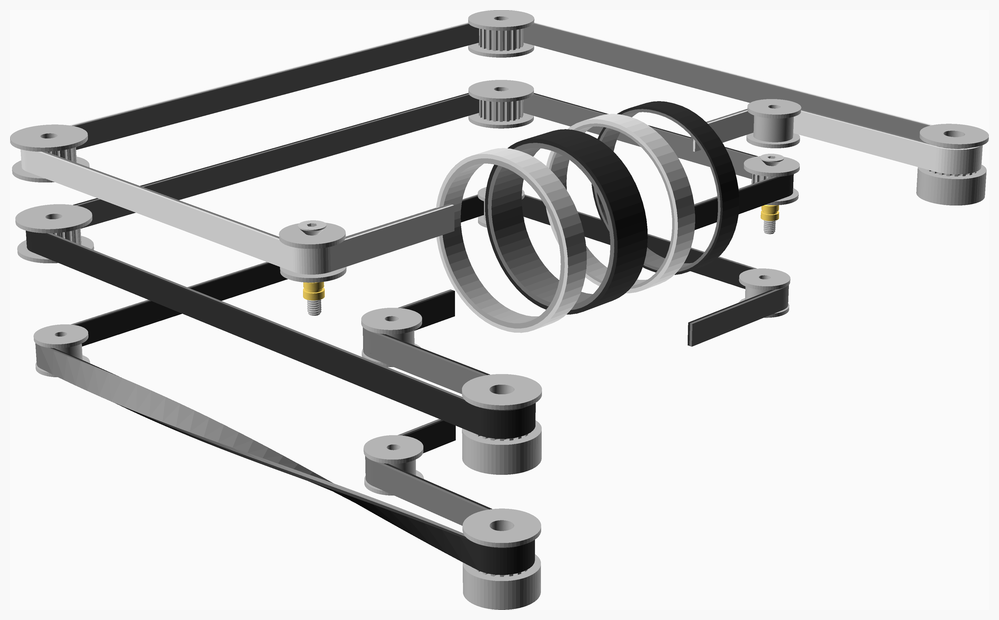
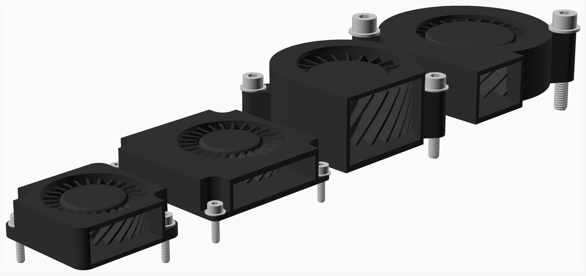
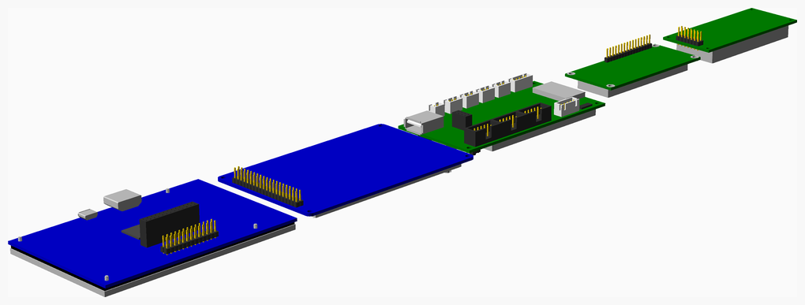
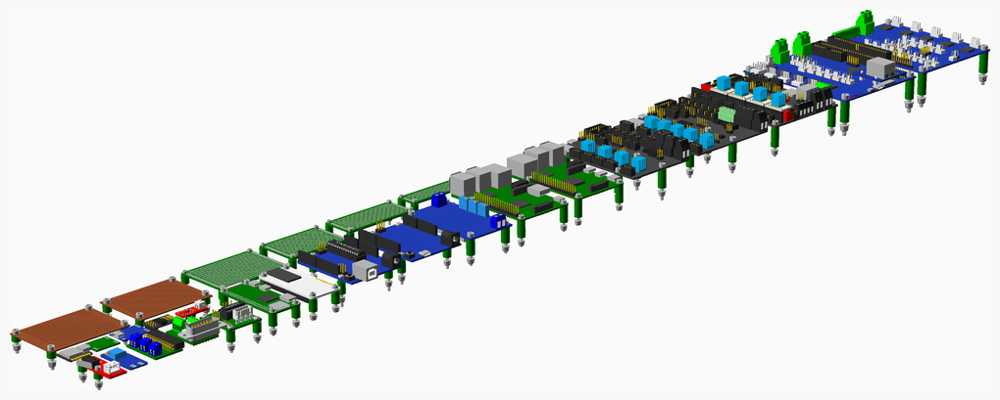
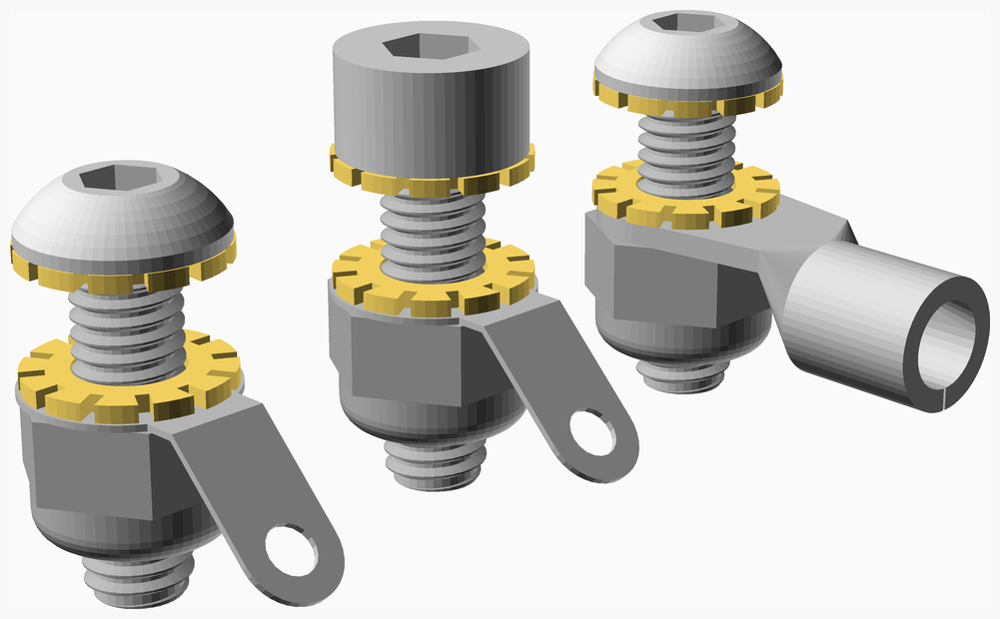
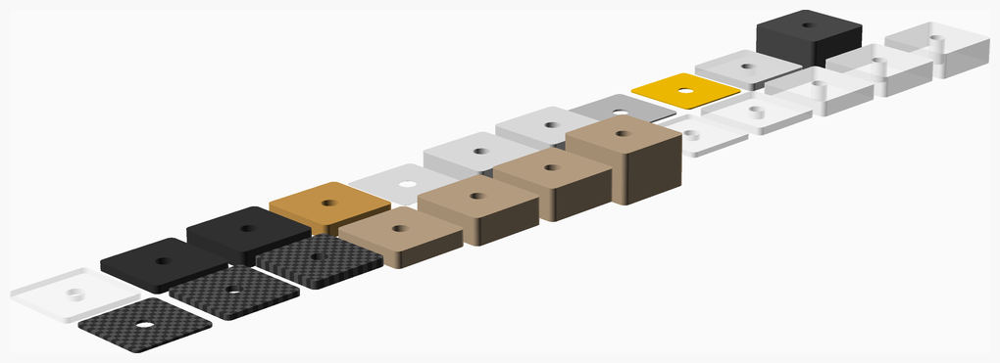
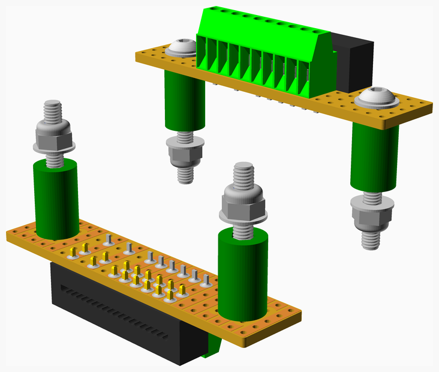
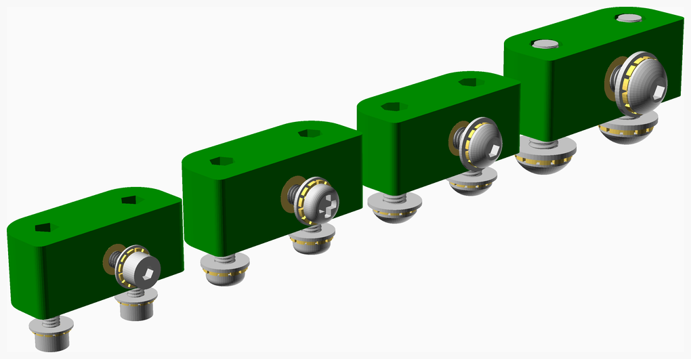
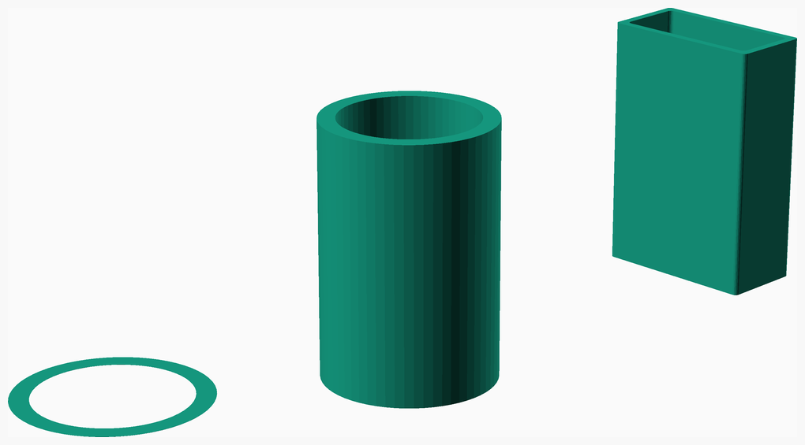

An ever expanding library of parts modelled in OpenSCAD useful for 3D printers and enclosures for electronics, etc.
It contains lots of vitamins (the RepRap term for non-printed parts), some general purpose printed parts and some utilities. There are also Python scripts to generate Bills of Materials (BOMs), STL files for all the printed parts and DXF files for CNC routed parts in a project.
Simple model of ball bearings with seals, the colour of which can be specified. If silver they are assumed to be metal and the part number gets a ZZ suffix. Any other colour is assumed to be rubber and the suffix is -2RS.
If a ball bearing has a child it is placed on its top surface, the same as nuts and washers, etc.
Also single bearing balls are modelled as just a silver sphere and a BOM entry.
vitamins/ball_bearings.scad Object definitions.
vitamins/ball_bearing.scad Implementation.
tests/ball_bearings.scad Code for this example.
bb_bore(type) |
Internal diameter |
bb_colour(type) |
Shield colour, "silver" for metal |
bb_diameter(type) |
External diameter |
bb_name(type) |
Part code without shield type suffix |
bb_width(type) |
Width |
bb_rim(type) |
Inner and outer rim thickness |
ball_bearing(type) |
Draw a ball bearing |
bearing_ball(dia) |
Draw a steel bearing ball |
| 1 | ball_bearing(BB608) |
Ball bearing 608-2RS 8mm x 22mm x 7mm |
| 1 | ball_bearing(BB624) |
Ball bearing 624-2RS 4mm x 13mm x 5mm |
| 2 | bearing_ball(3) |
Steel ball 3mm |
Actually just single cells at the moment, shown here with mating contacts in place.
Note that the Lumintop LM34 has a built in charger with a USB socket and two LEDs.
The battery length includes its contacts and the origin is the centre of that length. As well as drawing the battery and contacts there are functions exposing enough information to make a battery box.
vitamins/batteries.scad Object definitions.
vitamins/battery.scad Implementation.
tests/batteries.scad Code for this example.
battery_colour(type) |
Casing colour |
battery_contact(type) |
Contact type |
battery_diameter(type) |
Casing diameter |
battery_led_positions(type) |
LED positions for Lumintop |
battery_length(type) |
Total length including terminals |
battery_neg_dia(type) |
Negative terminal diameter |
battery_pos_dia(type) |
Positive terminal diameter |
battery_pos_height(type) |
Positive terminal height above the casing |
battery_usb_offset(type) |
USB connector offset from the top |
contact_height(type) |
Height of the flat part |
contact_neg(type) |
Negative spring height above the plate when compressed and the spring type |
contact_pos(type) |
Positive contact dimple height and top and bottom internal diameter |
contact_tab_length(type) |
Length of the tab |
contact_tab_width(type) |
Width of the tab |
contact_thickness(type) |
Thickness of the metal |
contact_width(type) |
Width of the flat part |
battery(type) |
Draw a battery |
battery_contact(type, pos = true) |
Draw a positive or negative battery contact for specified battery |
battery_led_positions(type) |
Position of the LEDs on a Lumintop |

| 6 | battery_contact(bcontact, false) |
Battery negative contact |
| 6 | battery_contact(bcontact, true) |
Battery positive contact |
| 1 | battery(AACELL) |
Cell AA |
| 1 | battery(AAACELL) |
Cell AAA |
| 1 | battery(CCELL) |
Cell C |
| 1 | battery(DCELL) |
Cell D |
| 1 | battery(LUMINTOP) |
Cell LUMINTOP 18650 LION with charger |
| 1 | battery(S25R18650) |
Cell Samsung 25R 18650 LION |
Models timing belt running over toothed or smooth pulleys and calculates an accurate length. Only models 2D paths, so not core XY!
By default the path is a closed loop but a gap length and position can be specified to make open loops.
Individual teeth are not drawn, instead they are represented by a lighter colour.
vitamins/belts.scad Object definitions.
vitamins/belt.scad Implementation.
tests/belts.scad Code for this example.
belt_pitch(type) |
Pitch in mm |
belt_thickness(type) |
Total thickness including teeth |
belt_tooth_height(type) |
Tooth height |
belt_width(type) |
Width in mm |
belt_length(points, gap = 0) |
Compute belt length given path and optional gap |
belt_pitch_height(type) |
Offset of the pitch radius from the tips of the teeth |
belt(type, points, gap = 0, gap_pt = undef) |
Draw a belt path given a set of points and pitch radii where the pulleys are. Closed loop unless a gap is specified |

| 1 | belt(GT2x6, [ ... ]) |
Belt GT2 x 6mm x 128mm |
| 1 | belt(GT2x6, [ ... ], 80, [0, 0.81]) |
Belt GT2 x 6mm x 694mm |
| 1 | belt(T2p5x6, [ ... ]) |
Belt T2.5 x 6mm x 130mm |
| 1 | belt(T5x10, [ ... ]) |
Belt T5 x 10mm x 130mm |
| 1 | belt(T5x6, [ ... ]) |
Belt T5 x 6mm x 130mm |
| 1 | insert(F1BM3) |
Heatfit insert M3 |
| 2 | pulley(GT2x20_toothed_idler) |
Pulley GT2 idler 20 teeth |
| 2 | pulley(GT2x16_plain_idler) |
Pulley GT2 idler smooth |
| 2 | pulley(GT2x20ob_pulley) |
Pulley GT2OB 20 teeth |
| 1 | screw(M3_cs_cap_screw, 20) |
Screw M3 cs cap x 20mm |
| 4 | screw(M3_grub_screw, 6) |
Screw M3 grub x 6mm |
Models of radial blowers.
vitamins/blowers.scad Object definitions.
vitamins/blower.scad Implementation.
tests/blowers.scad Code for this example.
blower_axis(type) |
XY coordinates of the axle |
blower_base(type) |
Thickness of the base |
blower_bore(type) |
The air intake hole diameter |
blower_depth(type) |
Height |
blower_exit(type) |
The width of the exit port |
blower_hub(type) |
Rotor hub diameter |
blower_hub_height(type) |
Height of the rotor |
blower_length(type) |
Length of enclosing rectangle |
blower_lug(type) |
Height of the lugs |
blower_screw(type) |
The type of screws needed |
blower_screw_hole(type) |
Screw hole diameter |
blower_screw_holes(type) |
List of XY coordinates of the screw holes |
blower_top(type) |
Thickness of the top |
blower_wall(type) |
Side wall thickness |
blower_width(type) |
Width of enclosing rectangle |
blower(type) |
Draw specified blower |
blower_hole_positions(type) |
Translate children to screw hole positions |

| 1 | blower(PE4020) |
Blower Pengda Technology 4020 |
| 1 | blower(RM5015) |
Blower Runda RB5015 |
| 3 | screw(M3_cap_screw, 20) |
Screw M3 cap x 20mm |
| 2 | screw(M4_cap_screw, 25) |
Screw M4 cap x 25mm |
| 3 | washer(M3_washer) |
Washer M3 x 7mm x 0.5mm |
| 2 | washer(M4_washer) |
Washer M4 x 9mm x 0.8mm |
Crude representation of a bulldog clip. The handle is not currently drawn but its length can be accessed to allow clearance. Used for holding glass on 3D printer beds but Swiss picture clips can be better.
vitamins/bulldogs.scad Object definitions.
vitamins/bulldog.scad Implementation.
tests/bulldogs.scad Code for this example.
bulldog_depth(type) |
Depth from the back to the front of the tubes |
bulldog_handle_length(type) |
Length that the handle protrudes from the back |
bulldog_height(type) |
Height at the back |
bulldog_length(type) |
Length along the profile |
bulldog_radius(type) |
Outside radius of the back corners |
bulldog_thickness(type) |
Thickness of the metal |
bulldog_tube(type) |
Outside diameter of the tubes |
bulldog(type, open = 4) |
Draw bulldog clip open by specified amount |

| 1 | bulldog(small_bulldog) |
Bulldog clip 19mm |
| 1 | bulldog(large_bulldog) |
Bulldog clip 25mm |
PCB mounted buttons. Can optionally have a coloured cap
vitamins/buttons.scad Object definitions.
vitamins/button.scad Implementation.
tests/buttons.scad Code for this example.
square_button_cap_d(type) |
Diameter of the body of the cap |
square_button_cap_flange_d(type) |
Diameter of the flange of the cap |
square_button_cap_flange_h(type) |
Height of the cap flange |
square_button_cap_h(type) |
Height of the cap including the stem |
square_button_cap_stem(type) |
Length of the cap stem |
square_button_d(type) |
Button diameter |
square_button_h(type) |
Height of the button above the PCB |
square_button_height(type) |
Height of the base |
square_button_rivit(type) |
Size of the corner rivets |
square_button_wall(type) |
Offset of the metal part |
square_button_width(type) |
Width and depth of the base |
square_button(type, colour = "yellow") |
Draw square button with specified cap colour if it has a cap |

| 1 | square_button(button_12mm, "yellow") |
Square button 12mm with yellow cap |
| 1 | square_button(button_4p5mm) |
Square button 4.5mm |
| 1 | square_button(button_6mm) |
Square button 6mm |
A strip of polypropylene used with ribbon cable to make a cable flexible in one direction only.
Modelled with a Bezier spline, which is not quite the same as a miniumum energy curve but very close, epecially near the extreme positions, where the model needs to be accurate.
When the sides are constrained then a circular model is more accurate.
vitamins/cable_strip.scad Implementation.
tests/cable_strips.scad Code for this example.
bezier_cable_length(depth, min_z, pos) |
Calculate a length that will achieve the desired minimum z |
cable_strip_length(depth, travel, extra = 15) |
Calculate circular cable strip length |
bezier_cable_strip(ways, depth, length, travel, pos, below, extra) |
Draw a cable strip using a Bezier curve |
cable_strip(ways, depth, travel, x, extra = 15) |
Draw a cable stripe with a semi circular fold |

| 1 | bezier_cable_strip(20, 50, 150, 100, -100, 100, 10) |
Polypropylene strip 170mm x 26mm x 0.8mm |
| 1 | bezier_cable_strip(20, 50, 150, 100, 0, 100, 10) |
Polypropylene strip 170mm x 26mm x 0.8mm |
| 1 | bezier_cable_strip(20, 50, 150, 100, 100, 100, 10) |
Polypropylene strip 170mm x 26mm x 0.8mm |
| 1 | cable_strip(20, 25, 100, -100, 30) |
Polypropylene strip 189mm x 24mm x 0.8mm |
| 1 | cable_strip(20, 25, 100, 0, 30) |
Polypropylene strip 189mm x 24mm x 0.8mm |
| 1 | cable_strip(20, 25, 100, 100, 30) |
Polypropylene strip 189mm x 24mm x 0.8mm |
Various electronic components used in hot ends and heated beds.
vitamins/components.scad Object definitions.
vitamins/component.scad Implementation.
tests/components.scad Code for this example.
al_clad_clearance(type) |
Clearance from screw hole centre to the body |
al_clad_height(type) |
Body height |
al_clad_hole(type) |
Hole diameter |
al_clad_hpitch(type) |
Lengthways pitch between screw holes |
al_clad_length(type) |
Body length |
al_clad_tab(type) |
Tab width |
al_clad_thickness(type) |
Tab thickness |
al_clad_vpitch(type) |
Widthways pitch between screw holes |
al_clad_width(type) |
Width including tabs |
al_clad_wire_length(type) |
Total length including wires |
resistor_colour(type) |
Body colour |
resistor_diameter(type) |
Body diameter |
resistor_hole(type) |
Hole big enough to glue it into |
resistor_length(type) |
Body length |
resistor_radial(type) |
Radial gives bead thermistor style body |
resistor_sleeved(type) |
Are the leads sleeved |
resistor_wire_diameter(type) |
Wire diameter |
resistor_wire_length(type) |
Wire length from body |
tc_body_height(type) |
Plastic body height |
tc_body_inset(type) |
How far metal is inset into the plastic body |
tc_body_length(type) |
Plastic body length |
tc_body_width(type) |
Plastic body width |
tc_hole_dia(type) |
Screw hole diameter |
tc_hole_pitch(type) |
Screw hole pitch |
tc_length(type) |
Across the lugs |
tc_spade_height(type) |
Terminal spade height measured from base |
tc_spade_pitch(type) |
Terminal spade pitch |
tc_thickness(type) |
Metal thickness |
tc_width(type) |
Width of lugs |
TO220_thickness() |
Thickness of the tab of a TO220 |
TO220(description, leads = 3, lead_length = 16) |
Draw a TO220 package, use description to describe what it is |
al_clad_resistor(type, value, leads = true) |
Draw an aluminium clad resistor |
al_clad_resistor_hole_positions(type) |
Position children at the screw holes of an aluminium clad resistor |
al_clad_resistor_holes(type, h = 100) |
Drill screw holes for an aluminium clad resistor |
panel_USBA() |
Draw a panel mount USBA connector |
panel_USBA_hole_positions() |
Place children at hole positions |
panel_USBA_holes(h = 100) |
Make holes for USBA connector |
resistor(type) |
Draw specified type of resitor |
sleeved_resistor(type, sleeving, bare = 5, heatshrink = false) |
Draw a resistor with sleeved leads and option heatshrink |
thermal_cutout(type) |
Draw specified thermal cutout |
thermal_cutout_hole_positions(type) |
Place children at hole positions |

| 1 | TO220("Generic TO220 package") |
Generic TO220 package |
| 8 | tubing(HSHRNK32) |
Heatshrink sleeving ID 3.2mm x 15mm |
| 1 | resistor(RWM04106R80J) |
Resistor RWM04106R80J 6R8 3W vitreous enamel |
| 1 | resistor(RIE1212UB5C5R6) |
Resistor UB5C 5R6F 5R6 3W vitreous enamel |
| 1 | al_clad_resistor(THS10, 4.7) |
Resistor aluminium clad THS10 4.7 |
| 1 | al_clad_resistor(THS15, 4.7) |
Resistor aluminium clad THS15 4.7 |
| 1 | al_clad_resistor(THS25, 4.7) |
Resistor aluminium clad THS25 4.7 |
| 1 | al_clad_resistor(THS50, 4.7) |
Resistor aluminium clad THS50 4.7 |
| 4 | screw(M2p5_pan_screw, 16) |
Screw M2.5 pan x 16mm |
| 4 | screw(M3_pan_screw, 16) |
Screw M3 pan x 16mm |
| 1 | panel_USBA() |
Socket USB A panel mount |
| 1 | thermal_cutout(TC) |
Thermal cutout TC |
| 1 | resistor(Epcos) |
Thermistor Epcos B57560G104F 100K 1% |
| 1 | resistor(EpcosBlue) |
Thermistor Epcos B57861S104F40 100K 1% |
| 1 | resistor(Honewell) |
Thermistor Honeywell 135-104LAC-J01 100K 1% |
LCD dispays.
vitamins/displays.scad Object definitions.
vitamins/display.scad Implementation.
tests/displays.scad Code for this example.
display_aperture(type) |
Size of the aperture including its depth |
display_height(type) |
Depth of the metal part |
display_pcb(type) |
PCB mounted on the back |
display_pcb_offset(type) |
3D offset of the PCB centre |
display_ribbon(type) |
Keep out region for ribbon cable |
display_thickness(type) |
Height of the metal part |
display_threads(type) |
Length that studs protrude from the PCB holes |
display_touch_screen(type) |
Touch screen position and size |
display_width(type) |
Width of the metal part |
display_depth(type) |
Total thickness including touch screen and PCB |
display_ts_thickness(type) |
Touch screen thickness or 0 |
display(type) |
Draw specified display |
display_aperture(type, clearance, clear_pcb = false) |
Make aperture cutout |

| 1 | display(HDMI5) |
HDMI display 5" |
| 1 | display(LCD1602A) |
LCD display 1602A |
D-connectors. Can be any number of ways, male or female, solder buckets, PCB mount or IDC, with or without pillars.
vitamins/d_connectors.scad Object definitions.
vitamins/d_connector.scad Implementation.
tests/d_connectors.scad Code for this example.
d_flange_length(type) |
Length of the flange |
d_flange_thickness(type) |
Thickness of the flange |
d_flange_width(type) |
Width of the flange |
d_front_height(type) |
From the back of the flange to the front |
d_height(type) |
From the front to the back of the metal part |
d_hole_pitch(type) |
Mounting hole pitch |
d_lengths(type) |
Lengths of the D for plug and socket |
d_ways(type) |
Number of ways |
d_widths(type) |
Widths of the D for plug and socket |
d_mate_distance(type) |
Spacing when mated |
d_pcb_offset(type) |
Height of the back of the flange above the PCB |
d_slot_length(type) |
Slot to clear the back |
d_connector_holes(type) |
Place children at the screw hole positions |
d_pillar() |
Draw a pillar for a D-connector |
d_plug(type, socket = false, pcb = false, idc = false) |
Draw specified D plug, which can be IDC, PCB or plain solder bucket |
d_socket(connector, pcb = false, idc = false) |
Draw specified D socket, which can be IDC, PCB or plain solder bucket |

| 1 | d_plug(DCONN15, idc = true) |
D-type 15 way IDC plug |
| 1 | d_socket(DCONN15, idc = true) |
D-type 15 way IDC socket |
| 1 | d_plug(DCONN25, pcb = true) |
D-type 25 way PCB mount plug |
| 1 | d_socket(DCONN25, pcb = true) |
D-type 25 way PCB mount socket |
| 1 | d_plug(DCONN9) |
D-type 9 way plug |
| 1 | d_socket(DCONN9) |
D-type 9 way socket |
| 6 | d_pillar() |
D-type connector pillar |
Axial fans.
Can draw three styles: solid, open frame and open frame with screw bosses.
vitamins/fans.scad Object definitions.
vitamins/fan.scad Implementation.
tests/fans.scad Code for this example.
fan_aperture(type) |
Optional diameter for the aperture, which can be bigger than the bore it has flared corners. |
fan_blades(type) |
The number of blades |
fan_bore(type) |
Diameter of the hole for the blades |
fan_boss_d(type) |
Diameter of the screw bosses |
fan_depth(type) |
Depth of fan |
fan_hole_pitch(type) |
Screw hole pitch |
fan_hub(type) |
Diameter of the hub |
fan_outer_diameter(type) |
Outside diameter of the frame |
fan_screw(type) |
Screw type |
fan_thickness(type) |
Thickness of the frame |
fan_width(type) |
Width of square |
fan_screw_length(type, thickness) |
Screw length required |
fan(type) |
Draw specified fan, origin in the centre |
fan_assembly(type, thickness, include_fan = true) |
Fan with its fasteners |
fan_hole_positions(type, z = undef) |
Position children at the screw hole positions |
fan_holes(type, poly = false, screws = true, h = 100) |
Make all the holes for the fan, or just the aperture if screws is false. Set poly true for poly_holes. |

| 1 | fan(fan120x25) |
Fan 120mm x 25mm |
| 1 | fan(fan25x10) |
Fan 25mm x 10mm |
| 1 | fan(fan30x10) |
Fan 30mm x 10mm |
| 1 | fan(fan40x11) |
Fan 40mm x 11mm |
| 1 | fan(fan50x15) |
Fan 50mm x 15mm |
| 1 | fan(fan60x15) |
Fan 60mm x 15mm |
| 1 | fan(fan60x25) |
Fan 60mm x 25mm |
| 1 | fan(fan70x15) |
Fan 70mm x 15mm |
| 1 | fan(fan80x25) |
Fan 80mm x 25mm |
| 1 | fan(fan80x38) |
Fan 80mm x 38mm |
| 4 | nut(M2p5_nut, nyloc = true) |
Nut M2.5 nyloc |
| 8 | nut(M3_nut, nyloc = true) |
Nut M3 nyloc |
| 28 | nut(M4_nut, nyloc = true) |
Nut M4 nyloc |
| 4 | screw(M2p5_pan_screw, 20) |
Screw M2.5 pan x 20mm |
| 8 | screw(M3_dome_screw, 20) |
Screw M3 dome x 20mm |
| 20 | screw(M4_dome_screw, 16) |
Screw M4 dome x 16mm |
| 4 | screw(M4_dome_screw, 25) |
Screw M4 dome x 25mm |
| 4 | screw(M4_dome_screw, 30) |
Screw M4 dome x 30mm |
| 4 | washer(M2p5_washer) |
Washer M2.5 x 5.9mm x 0.5mm |
| 8 | washer(M3_washer) |
Washer M3 x 7mm x 0.5mm |
| 28 | washer(M4_washer) |
Washer M4 x 9mm x 0.8mm |
20mm panel mount fuse holder.
vitamins/fuseholder.scad Implementation.
tests/fuseholder.scad Code for this example.
fuseholder_diameter() |
Outside diameter of flange |
fuseholder(thickness) |
Fuseholder with nut in place for specified panel thickness |
fuseholder_hole(h = 100) |
Hole with flats for fuseholder |

| 1 | fuseholder(6) |
Fuse holder 20mm |
Hot end models. The E3D models were originally contributed to Mendel90 by Philippe LUC @philfifi
Needs updating as mostly obsolete versions.
vitamins/hot_ends.scad Object definitions.
vitamins/hot_end.scad Implementation.
tests/hot_ends.scad Code for this example.
hot_end_duct_height_fan(type) |
Duct height at fan end |
hot_end_duct_height_nozzle(type) |
Duct height at nozzle end |
hot_end_duct_offset(type) |
Offset of circular duct centre from the nozzle |
hot_end_duct_radius(type) |
Require radius to clear the heater block |
hot_end_groove(type) |
Groove length |
hot_end_groove_dia(type) |
Groove internal diameter |
hot_end_inset(type) |
The length that goes into the mounting |
hot_end_insulator_colour(type) |
Colour of the insulator |
hot_end_insulator_diameter(type) |
Outside diameter |
hot_end_insulator_length(type) |
Length of the insulator |
hot_end_part(type) |
Description |
hot_end_style(type) |
Basic type, jhead or e3d |
hot_end_total_length(type) |
Length from nozzle tip to the top |
hot_end_length(type) |
The amount the hot end extends below its mounting |
hot_end_need_cooling(type) |
Has own fan so don't need cooling hole in the duct |
hot_end(type, filament, naked = false) |
Draw specified hot end |

| 2 | tubing(HSHRNK16) |
Heatshrink sleeving ID 1.6mm x 15mm |
| 4 | tubing(HSHRNK64, 60) |
Heatshrink sleeving ID 6.4mm x 60mm |
| 1 | e3d_hot_end(E3Dv5, 3) |
Hot end E3D V5 direct 3mm |
| 1 | e3d_hot_end(E3Dv6, 3) |
Hot end E3D V6 direct 3mm |
| 1 | e3d_hot_end(E3D_clone, 3) |
Hot end E3D clone aliexpress 3mm |
| 1 | jhead_hot_end(JHeadMk5, 3) |
Hot end JHead MK5 3mm |
| 2 | tubing(PTFE07, 62) |
PTFE sleeving OD 1.2mm ID 0.71mm x 62mm |
| 2 | tubing(PTFE20, 45) |
PTFE sleeving OD 2.6mm ID 2mm x 45mm |
| 1 | resistor(RIE1212UB5C5R6) |
Resistor UB5C 5R6F 5R6 3W vitreous enamel |
| 1 | Tape self amalgamating silicone 110mm x 25mm | |
| 1 | resistor(Epcos) |
Thermistor Epcos B57560G104F 100K 1% |
| 2 | Wire Red PTFE 16/0.2 length 170mm | |
| 4 | ziptie(small_ziptie, 8) |
Ziptie 100mm min length |
IEC mains inlets and outlet.
vitamins/iecs.scad Object definitions.
vitamins/iec.scad Implementation.
tests/iecs.scad Code for this example.
iec_bezel_h(type) |
Bezel height |
iec_bezel_r(type) |
Bezel corner radius |
iec_bezel_t(type) |
Bezel thickness |
iec_bezel_w(type) |
Bezel width |
iec_depth(type) |
Depth of the body below the flange |
iec_flange_h(type) |
Flange height |
iec_flange_r(type) |
Flange corner radius |
iec_flange_t(type) |
Flange thickness |
iec_flange_w(type) |
Flange width not including the lugs |
iec_male(type) |
True for an outlet |
iec_part(type) |
Description |
iec_pitch(type) |
Screw hole pitch |
iec_screw(type) |
Screw type |
iec_slot_h(type) |
Body height |
iec_slot_r(type) |
Body corner radius |
iec_slot_w(type) |
Body width |
iec_spades(type) |
Spade type |
iec_width(type) |
Widest part including the lugs |
iec(type) |
Draw specified IEC connector |
iec_assembly(type, thickness) |
Assembly with fasteners given panel thickness |
iec_holes(type, h = 100, poly = false, horizontal = false, insert = false) |
Drill the required panel holes |
iec_screw_positions(type) |
Position children at the screw holes |

| 1 | iec(IEC_fused_inlet) |
IEC fused inlet |
| 1 | iec(IEC_inlet) |
IEC inlet |
| 1 | iec(IEC_inlet_atx) |
IEC inlet for ATX |
| 1 | iec(IEC_outlet) |
IEC outlet |
| 8 | nut(M3_nut, nyloc = true) |
Nut M3 nyloc |
| 4 | screw(M3_cs_cap_screw, 10) |
Screw M3 cs cap x 10mm |
| 4 | screw(M3_cs_cap_screw, 12) |
Screw M3 cs cap x 12mm |
| 8 | washer(M3_washer) |
Washer M3 x 7mm x 0.5mm |
Heatfit threaded inserts. Can be pushed into thermoplastics using a soldering iron with a conical bit set to 200°C.
vitamins/inserts.scad Object definitions.
vitamins/insert.scad Implementation.
tests/inserts.scad Code for this example.
insert_barrel_d(type) |
Diameter of the main barrel |
insert_hole_radius(type) |
Radius of the required hole in the plastic |
insert_length(type) |
Length |
insert_outer_d(type) |
Outer diameter at the top |
insert_ring1_h(type) |
Height of the top and middle rings |
insert_ring2_d(type) |
Diameter of the middle ring |
insert_ring3_d(type) |
Diameter of the bottom ring |
insert_screw_diameter(type) |
Screw size |
insert(type) |
Draw specified insert |
insert_boss(type, z, wall = 2 * extrusion_width) |
Make a boss to take an insert |
insert_hole(type, counterbore = 0, horizontal = false) |
Make a hole to take an insert, counterbore is the extra length for the screw |

| 1 | insert(F1BM) |
Heatfit insert M2 |
| 1 | insert(F1BM2p5) |
Heatfit insert M2.5 |
| 1 | insert(F1BM3) |
Heatfit insert M3 |
| 1 | insert(F1BM4) |
Heatfit insert M4 |
4mm jack sockets and binding posts. Each has a colour for the BOM entry and an optional alternative colour for display. E.g. a "brown" socket for mains live needs to be displayed as "sienna" to look realistic.
vitamins/jack.scad Implementation.
tests/jack.scad Code for this example.
jack_4mm_hole_radius() |
Panel hole radius for 4mm jack |
jack_4mm_shielded_hole_radius() |
Panel hole radius for 4mm shielded jack |
post_4mm_diameter() |
Outer diameter of 4mm binding post |
jack_4mm(colour, thickness, display_colour = false) |
Draw a 4mm jack socket with nut positioned for specified panel thickness |
jack_4mm_shielded(colour, thickness, display_colour = false) |
Draw a 4mm shielded jack |
post_4mm(colour, thickness, display_colour = false) |
Draw a 4mm binding post |
post_4mm_hole(h = 100, poly = false) |
Drill hole for 4mm binding post |

| 1 | post_4mm("red", 3) |
4mm jack binding post red |
| 1 | jack_4mm("blue", 3, "royalblue") |
4mm jack socket blue |
| 1 | jack_4mm_shielded("brown", 3, "sienna") |
4mm shielded jack socket brown |
Nuts for leadscrews.
vitamins/leadnuts.scad Object definitions.
vitamins/leadnut.scad Implementation.
tests/leadnuts.scad Code for this example.
leadnut_bore(type) |
Thread size |
leadnut_flange_dia(type) |
Flange diameter |
leadnut_flange_offset(type) |
Offset of the flange from the top |
leadnut_flange_t(type) |
Flange thickness |
leadnut_height(type) |
Total height |
leadnut_hole_dia(type) |
The diameter of the screw holes |
leadnut_hole_pitch(type) |
The radia pitch of the screw holes |
leadnut_holes(type) |
The number of screw holes |
leadnut_od(type) |
Outer diameter of the shank |
leadnut_screw(type) |
The type of the fixing screws |
leadnut_shank(type) |
The length of the shank below the flange |
leadnut(type) |
Draw specified leadnut |
leadnut_screw_positions(type) |
Position children at the screw holes |

| 1 | leadnut(LSN8x2) |
Leadscrew nut 8 x 2 |
| 1 | leadnut(LSN8x8) |
Leadscrew nut 8 x 8 RobotDigg |
Standard domed through hole LEDs. Can specify colour and lead length.
vitamins/leds.scad Object definitions.
vitamins/led.scad Implementation.
tests/leds.scad Code for this example.
led_diameter(type) |
Body diameter |
led_height(type) |
Body height |
led_lead_t(type) |
Lead thickness |
led_pitch(type) |
Lead pitch |
led_rim_dia(type) |
Rim diameter |
led_rim_t(type) |
Rim height |
led_hole_radius(type) |
Radius of panel hole to accept LED |
led(type, colour = "red", lead = 5) |
Draw specified LED with desired colour and led length |

| 1 | led(LED10mm) |
LED 10 mm red |
| 1 | led(LED3mm, "green") |
LED 3 mm green |
| 1 | led(LED5mm, "blue") |
LED 5 mm blue |
LED strip lights that can be cut to size.
The definitions are for the full length but they can be cut to size by specifying how many segments,
which can by calcuated using light_strip_segments(type, max_length).
The light_strip_clip() module makes a clip to go around the light that can be incorporated into a printed bracket to hold it.
vitamins/light_strips.scad Object definitions.
vitamins/light_strip.scad Implementation.
tests/light_strips.scad Code for this example.
light_strip_aperture(type) |
Inside width |
light_strip_depth(type) |
Outside depth |
light_strip_grouped(type) |
Number of LEDs in each group |
light_strip_leds(type) |
Total number of LEDs |
light_strip_length(type) |
Un-cut length |
light_strip_pcb_thickness(type) |
PCB thickness |
light_strip_thickness(type) |
Metal thickness |
light_strip_width(type) |
Outside width |
light_strip_clip_depth(light) |
Depth of the clip |
light_strip_clip_length(light) |
Outside length |
light_strip_clip_slot(light) |
Clip slot size |
light_strip_clip_width(light) |
Outside width |
light_strip_cut_length(type, segs) |
Calculate cut length given segments |
light_strip_segments(type, max_length) |
Calculate the maximum number of segments that fit in max_length |
light_strip(type, segs = undef) |
Draw specified light strip, segs can be used to limit the length |
light_strip_clip(light) |
Make a clip to go over the strip to be incorporated into a bracket |

| 1 | light_strip(Rigid5050, 6) |
Light strip rigid SMD5050 low profile x 250mm (6 segments) |
| 1 | light_strip(RIGID5050, 6) |
Light strip rigid SMD5050 x 250mm (6 segments) |
LMnUU linear bearings.
vitamins/linear_bearings.scad Object definitions.
vitamins/linear_bearing.scad Implementation.
tests/linear_bearings.scad Code for this example.
bearing_dia(type) |
Outside diameter |
bearing_length(type) |
Total length |
bearing_rod_dia(type) |
Internal diameter |
bearing_radius(type) |
Outside radius |
linear_bearing(type) |
Draw specified linear bearing |

| 1 | linear_bearing(LM10UU) |
Linear bearing LM10UU |
| 1 | linear_bearing(LM12UU) |
Linear bearing LM12UU |
| 1 | linear_bearing(LM3UU) |
Linear bearing LM3UU |
| 1 | linear_bearing(LM4UU) |
Linear bearing LM4UU |
| 1 | linear_bearing(LM5UU) |
Linear bearing LM5UU |
| 1 | linear_bearing(LM6UU) |
Linear bearing LM6UU |
| 1 | linear_bearing(LM8UU) |
Linear bearing LM8UU |
UK 13A sockets at the moment.
vitamins/mains_sockets.scad Object definitions.
vitamins/mains_socket.scad Implementation.
tests/mains_sockets.scad Code for this example.
mains_socket_corner(type) |
Corner radius |
mains_socket_depth(type) |
Depth at the base |
mains_socket_height(type) |
Height |
mains_socket_offset(type) |
Offset of the socket from the centre |
mains_socket_pitch(type) |
Screw hole pitch |
mains_socket_t(type) |
Plastic thickness |
mains_socket_top_d(type) |
Depth at the top, might be tapered |
mains_socket_top_w(type) |
Width at the top, might be tapered |
mains_socket_width(type) |
Width at the base |
mains_socket_screw(type) |
Screw type |
mains_socket(type) |
Draw specified 13A socket |
mains_socket_earth_position(type) |
Position of earth terminal for DiBond panel |
mains_socket_hole_positions(type) |
Position children at the screw holes |
mains_socket_holes(type, h = 0) |
Panel cutout |

| 1 | mains_socket(Contactum) |
Mains socket 13A |
| 1 | mains_socket(MKLOGIC) |
Mains socket 13A, switched |
LED volt meter modules available from China and a printed bezel that allows them to be mounted into a CNC cut panel. The meter is held in the bezel by melting the stakes with a soldering iron set to 200°C. The bezel is fixed in the panel with hot glue.
Needs 7 segment font from http://www.twyman.org.uk/Fonts/font-download.htm to look realistic.
vitamins/meter.scad Implementation.
tests/meter.scad Code for this example.
meter_height(type = led_meter) |
Height of body excluding PCB |
meter_hole_pitch(type = led_meter) |
Lug hole pitch |
meter_hole_radius(type = led_meter) |
Lug hole radius |
meter_length(type = led_meter) |
Length of body |
meter_lug_length(type = led_meter) |
PCB length including lugs |
meter_lug_width(type = led_meter) |
Lug width |
meter_pcb_length(type = led_meter) |
PCB length excluding lugs |
meter_pcb_thickness(type = led_meter) |
PCB thickness |
meter_pcb_width(type = led_meter) |
PCB width |
meter_width(type = led_meter) |
Width of body |
meter() |
Default meter type |
meter_bezel_length(type = led_meter) |
Printed bezel length |
meter_bezel_rad(type = led_meter) |
Printed bezel corner radius |
meter_bezel_wall(type = led_meter) |
Printed bezel wall thickness |
meter_bezel_width(type = led_meter) |
Printed bezel width |
meter(type = led_meter, colour = "red", value = "888", display_colour = false) |
Draw a meter with optional colour and display value |
meter_assembly(type = led_meter, colour = "red", value = "888", display_colour = false) |
Meter assembled into the bezel |
meter_bezel(type = led_meter) |
Generate the STL for the meter bezel |
meter_bezel_hole(type = led_meter, h = 100) |
Make a hole to fit the meter Bezel |
meter_hole_positions(type = led_meter) |
Position children over the holes |

| 1 | meter(led_meter, colour = "blue") |
LED meter blue |
| 2 | meter(led_meter) |
LED meter red |
| 2 | meter_bezel.stl |
Used for limit switches.
vitamins/microswitches.scad Object definitions.
vitamins/microswitch.scad Implementation.
tests/microswitches.scad Code for this example.
microswitch_body_clr(type) |
Body colour |
microswitch_button_clr(type) |
Button colour |
microswitch_button_pos(type) |
Button position |
microswitch_button_t(type) |
Button thickness |
microswitch_button_w(type) |
Button width |
microswitch_hole_d(type) |
Screw hole diameter |
microswitch_holes(type) |
Hole positions |
microswitch_leg(type) |
Leg types |
microswitch_legs(type) |
Leg positions |
microswitch_length(type) |
Body length |
microswitch_radius(type) |
Body corner radius |
microswitch_thickness(type) |
Body thickness |
microswitch_width(type) |
Body width |
microswitch_lower_extent(type) |
How far legs extend downwards |
microswitch_right_extent(type) |
How far legs extend right |
microswitch(type) |
Draw specified microswitch |
microswitch_hole_positions(type) |
Place children at the hole positions |
microswitch_wire_positions(type, skip = undef) |
Place children at the leg hole positions |

| 1 | microswitch(small_microswitch) |
Microswitch DM1-00P-110-3 |
| 1 | microswitch(medium_microswitch) |
Microswitch SS-01 or SS-5GL |
| 1 | microswitch(large_microswitch) |
Microswitch Saia G3 low force |
Microview OLED display with on board AVR by geekammo / Sparkfun.
microview() generates the model. microview(true) makes an object to cut out a panel aperture for it.
Uses STL files copyright geekammo and licenced with MIT license, see microview/LICENSE.txt.
vitamins/microview.scad Implementation.
tests/microview.scad Code for this example.
microview(cutout = false) |
Draw microview or generate a panel cutout for it |

| 1 | microview() |
Microview OLED display |
Random screw down modules. Currently just DROK buck converters.
vitamins/modules.scad Object definitions.
vitamins/module.scad Implementation.
tests/modules.scad Code for this example.
mod_height(type) |
Body height |
mod_hole_r(type) |
Screw hole radius |
mod_holes(type) |
Screw hole positions |
mod_length(type) |
Body length |
mod_part(type) |
Description |
mod_screw(type) |
Screw type |
mod_screw_z(type) |
Thickness of screw lug |
mod_width(type) |
Body width |
mod(type) |
Draw specified module |
mod_screw_positions(type) |
Position children at the screw positions |
module_assembly(type, thickness) |
Module with its fasteners in place |

| 1 | mod(drok_buck) |
Drok buck converter |
| 2 | nut(M4_nut, nyloc = true) |
Nut M4 nyloc |
| 2 | screw(M4_dome_screw, 12) |
Screw M4 dome x 12mm |
| 4 | washer(M4_washer) |
Washer M4 x 9mm x 0.8mm |
Default is steel but can be drawn as brass or nylon. A utility for making nut traps included.
If a nut is given a child then it gets placed on its top surface.
vitamins/nuts.scad Object definitions.
vitamins/nut.scad Implementation.
tests/nuts.scad Code for this example.
nut_radius(type) |
Radius across the corners |
nut_size(type) |
Diameter of the corresponding screw |
nut_trap_depth(type) |
Depth of nut trap |
nut_washer(type) |
Corresponding washer |
nut_flat_radius(type) |
Radius across the flats |
nut_thickness(type, nyloc = false) |
Thickness of plain or nyloc version |
nut_trap_flat_radius(nut, horizontal = false) |
Radius across the flats of a nut trap |
nut_trap_radius(nut, horizontal = false) |
Radius across the corners of a nut trap |
nut(type, nyloc = false, brass = false, nylon = false) |
Draw specified nut |
nut_and_washer(type, nyloc) |
Draw nut with corresponding washer |
nut_trap(screw, nut, depth = 0, horizontal = false, supported = false, h = 200) |
Make a nut trap |
wingnut(type) |
Draw a wingnut |

| 1 | nut(M2_nut) |
Nut M2 |
| 1 | nut(M2_nut, nyloc = true) |
Nut M2 nyloc |
| 1 | nut(M2p5_nut) |
Nut M2.5 |
| 1 | nut(M2p5_nut, nyloc = true) |
Nut M2.5 nyloc |
| 1 | nut(M2p5_nut, nylon = true) |
Nut M2.5 nylon |
| 1 | nut(M3_nut) |
Nut M3 |
| 1 | nut(M3_nut, brass = true) |
Nut M3 brass |
| 1 | nut(M3_nut, nyloc = true) |
Nut M3 nyloc |
| 1 | nut(M4_nut) |
Nut M4 |
| 1 | nut(M4_nut, nyloc = true) |
Nut M4 nyloc |
| 1 | nut(M5_nut) |
Nut M5 |
| 1 | nut(M5_nut, nyloc = true) |
Nut M5 nyloc |
| 1 | nut(M6_nut) |
Nut M6 |
| 1 | nut(M6_half_nut) |
Nut M6 |
| 1 | nut(M6_nut, nyloc = true) |
Nut M6 nyloc |
| 1 | nut(M8_nut) |
Nut M8 |
| 1 | nut(M8_nut, nyloc = true) |
Nut M8 nyloc |
| 1 | washer(M6_washer) |
Washer M6 x 12.5mm x 1.5mm |
| 1 | wingnut(M4_wingnut) |
Wingnut M4 |
Nicodrone OpenGrab V3 electro-permananet magnet, see https://nicadrone.com/products/epm-v3.
A permanent magnet that can be magnatized and de-magnatized electronically.
vitamins/opengrab.scad Implementation.
tests/opengrab.scad Code for this example.
opengrab_depth() |
Module height |
opengrab_target_thickness() |
Target sheet thickness |
opengrab_width() |
Module width |
opengrab() |
Draw OpenGrab module |
opengrab_hole_positions() |
Position children at the screw positions |
opengrab_target() |
Draw OpenGrab target |

| 1 | opengrab_target() |
OpenGrab silicon steel target plate |
| 1 | opengrab() |
OpenGrab V3 electro permanent magnet |
Nitrile rubber O-rings.
Just a black torus specified by internal diameter, id and minor_d plus a BOM entry.
Can be shown stretched by specifying the actual_id.
vitamins/o_ring.scad Implementation.
tests/o_ring.scad Code for this example.
O_ring(id, minor_d, actual_id = 0) |
Draw O-ring with specified internal diameter and minor diameter. actual_id can be used to stretch it around something. |

| 1 | O_ring(2.5, 1.6) |
O-ring nitrile 2.5mm x 1.6mm |
PCBs and perfboard with optional components. The shape can be a rectangle with optionally rounded corners or a polygon for odd shapes like Arduino.
vitamins/pcbs.scad Object definitions.
vitamins/pcb.scad Implementation.
tests/pcbs.scad Code for this example.
hdr_base_colour(type) |
Header insulator colour |
hdr_pin_below(type) |
Header pin length underneath |
hdr_pin_colour(type) |
Header pin colour |
hdr_pin_length(type) |
Header pin length |
hdr_pin_width(type) |
Header pin size |
hdr_pitch(type) |
Header pitch |
hdr_socket_depth(type) |
Socket depth for female housing |
pcb_accessories(type) |
List of accessories to go on the BOM, SD cards, USB cables, etc. |
pcb_colour(type) |
Colour of the subtrate |
pcb_components(type) |
List of components |
pcb_grid(type) |
Grid if a perfboard |
pcb_hole_d(type) |
Mounting hole diameter |
pcb_holes(type) |
List of hole positions |
pcb_land_d(type) |
Pad around mounting hole |
pcb_length(type) |
Length |
pcb_name(type) |
Description |
pcb_parts_on_bom(type) |
True if the parts should be separate BOM items |
pcb_polygon(type) |
Optional outline polygon for odd shaped boards |
pcb_radius(type) |
Corner radius |
pcb_thickness(type) |
Thickness |
pcb_width(type) |
Width |
pcb_coord(type, p) |
Convert offsets from the edge to coordinates relative to the centre |
pcb_screw(type, cap = hs_cap) |
Mounting screw type |
barrel_jack(cutout = false) |
Draw barrel power jack |
chip(length, width, thickness, cutout = false) |
Draw a black cube to represent a chip |
flex(cutout = false) |
Draw flexistrip connector |
hdmi(cutout = false) |
Draw HDMI socket |
idc_transition(type, cols = 5, skip = [], cutout = false) |
Draw IDC transition header |
jack(cutout = false) |
Draw 3.5mm jack |
molex_254(ways) |
Draw molex header |
pcb(type) |
Draw specified PCB |
pcb_assembly(type, height, thickness) |
Draw PCB assembly with spaces and fasteners in place |
pcb_base(type, height, thickness, wall = 2) |
Generate STL for a base with PCB spacers |
pcb_component(comp, cutouts = false, angle = undef) |
Draw pcb component from description |
pcb_components(type, cutouts = false, angle = undef) |
Draw list of PCB components on the PCB |
pcb_cutouts(type, angle = undef) |
Make cut outs to clear components on a PCB |
pcb_grid(type, x, y, z = 0) |
Positions children at specified grid positions |
pcb_screw_positions(type) |
Positions children at the mounting hole positions |
pcb_spacer(screw, height, wall = 1.8) |
Generate STL for PCB spacer |
pin(type = 2p54header, length = undef) |
Draw a header pin |
pin_header(type = 2p54header, cols = 1, rows = 1, smt = false, cutout = false) |
Draw pin header |
pin_socket(type = 2p54header, cols = 1, rows = 1, right_angle = false, height = 0, cutout = false) |
Draw pin socket |
rj45(cutout = false) |
Draw RJ45 Ethernet connector |
terminal_254(ways, skip = []) |
Draw 0.1" terminal block |
terminal_35(ways) |
Draw 3.5mm terminal block |
usb_Ax2(cutout = false) |
Draw USB type A dual socket |
usb_B(cutout = false) |
Draw USB B connector |
usb_uA(cutout = false) |
Draw USB micro A connector |

| 1 | pcb(ArduinoUno3) |
Arduino Uno R3 |
| 1 | d_plug(DCONN15, pcb = true) |
D-type 15 way PCB mount plug |
| 1 | pcb(DuetW) |
Duet WiFi electronics |
| 1 | pcb(ExtruderPCB) |
Extruder connection PCB |
| 1 | pcb(Keyes5p1) |
Keyes5.1 Arduino Uno expansion board |
| 1 | pcb(Melzi) |
Melzi electronics |
| 2 | Micro SD card | |
| 1 | molex_254(2) |
Molex KK header 2 way |
| 1 | molex_254(3) |
Molex KK header 3 way |
| 16 | nut(M2_nut, nyloc = true) |
Nut M2 nyloc |
| 12 | nut(M2p5_nut, nyloc = true) |
Nut M2.5 nyloc |
| 12 | nut(M3_nut, nyloc = true) |
Nut M3 nyloc |
| 4 | nut(M4_nut, nyloc = true) |
Nut M4 nyloc |
| 1 | pcb(PI_IO) |
PI_IO V2 |
| 1 | pcb(PSU12V1A) |
PSU 12V 1A |
| 1 | pcb(PERF60x40) |
Perfboard 60 x 40mm |
| 1 | pcb(PERF70x30) |
Perfboard 70 x 30mm |
| 1 | pcb(PERF70x50) |
Perfboard 70 x 50mm |
| 1 | pcb(PERF74x51) |
Perfboard 74 x 51mm |
| 1 | pcb(PERF80x20) |
Perfboard 80 x 20mm |
| 1 | pin_socket(2p54header, 13, 2, right_angle = true) |
Pin socket 13 x 2 right_angle |
| 1 | pcb(RPI3) |
Raspberry Pi 3 |
| 12 | screw(M2_cap_screw, 20) |
Screw M2 cap x 20mm |
| 4 | screw(M2_cap_screw, 25) |
Screw M2 cap x 25mm |
| 4 | screw(M2p5_cap_screw, 16) |
Screw M2.5 cap x 16mm |
| 8 | screw(M2p5_pan_screw, 20) |
Screw M2.5 pan x 20mm |
| 8 | screw(M3_cap_screw, 25) |
Screw M3 cap x 25mm |
| 4 | screw(M3_cap_screw, 30) |
Screw M3 cap x 30mm |
| 4 | screw(M4_cap_screw, 30) |
Screw M4 cap x 30mm |
| 3 | terminal_35(2) |
Terminal block 2 way 3.5mm |
| 2 | terminal_254(4) |
Terminal block 4 way 0.1" |
| 1 | USB A to Mini B lead | |
| 16 | washer(M2_washer) |
Washer M2 x 5mm x 0.3mm |
| 12 | washer(M2p5_washer) |
Washer M2.5 x 5.9mm x 0.5mm |
| 12 | washer(M3_washer) |
Washer M3 x 7mm x 0.5mm |
| 4 | washer(M4_washer) |
Washer M4 x 9mm x 0.8mm |
| 4 | pcb_spacer20100.stl | |
| 4 | pcb_spacer20110.stl | |
| 4 | pcb_spacer20120.stl | |
| 4 | pcb_spacer20130.stl | |
| 4 | pcb_spacer2560.stl | |
| 8 | pcb_spacer2570.stl | |
| 4 | pcb_spacer2580.stl | |
| 4 | pcb_spacer2590.stl | |
| 4 | pcb_spacer30140.stl | |
| 4 | pcb_spacer30150.stl | |
| 4 | pcb_spacer30170.stl | |
| 4 | pcb_spacer40160.stl |
Threaded pillars. Each end can be male or female.
vitamins/pillars.scad Object definitions.
vitamins/pillar.scad Implementation.
tests/pillars.scad Code for this example.
pillar_bot_thread(type) |
Bottom thread length, + for male, - for female |
pillar_height(type) |
Body height |
pillar_i_colour(type) |
Colour of the inner part |
pillar_id(type) |
Inner diameter of metal part |
pillar_ifn(type) |
Inner number of sides, 6 for hex, 0 for smooth cylinder |
pillar_name(type) |
Name of part |
pillar_o_colour(type) |
Colour of the outer part |
pillar_od(type) |
Outer diameter of body |
pillar_ofn(type) |
Outer number of sides, 6 for hex, 0 for smooth cylinder |
pillar_thread(type) |
Thread diameter |
pillar_top_thread(type) |
Top thread length, + for male, - for female |
pillar(type) |
Draw specified pillar |

| 1 | pillar(M3x13_hex_pillar) |
Pillar hex M/F M3x13 |
| 1 | pillar(M3x20_hex_pillar) |
Pillar hex M/F M3x20 |
| 1 | pillar(M2x16_brass_pillar) |
Pillar nurled F/M M2x16 |
| 1 | pillar(M3x10_nylon_hex_pillar) |
Pillar nylon M/F M3x10 |
| 1 | pillar(M3x20_nylon_pillar) |
Pillar nylon M/F M3x20 |
| 1 | pillar(M3x20_nylon_hex_pillar) |
Pillar nylon M/F M3x20 |
| 1 | pillar(M4x17_nylon_pillar) |
Pillar nylon M/F M4x20 |
Powersupplies. Can be a simple cube or can be defined by a list of six faces, each with thickness, holes, cutouts, etc.
Face order is bottom, top, left, right, front, back.
vitamins/psus.scad Object definitions.
vitamins/psu.scad Implementation.
tests/psus.scad Code for this example.
atx_psu(type) |
True if an ATX style PSU |
psu_accessories(type) |
Accessories to add to BOM, e.g. mains lead |
psu_face_cutouts(type) |
List of polygons to remove |
psu_face_fan(type) |
Fan x,y position and type |
psu_face_grill(type) |
Is this face a grill |
psu_face_holes(type) |
List of screw hole positions |
psu_face_iec(type) |
IEC connector x,y, rotation and type |
psu_face_switch(type) |
Rocker switch x,y, rotation and type |
psu_face_thickness(type) |
The thickness |
psu_faces(type) |
List of face descriptions |
psu_height(type) |
Height |
psu_left_bay(type) |
Bay for terminals |
psu_length(type) |
Length |
psu_name(type) |
The part name |
psu_right_bay(type) |
Bay for heatsink |
psu_screw(type) |
Screw type |
psu_screw_hole_radius(type) |
Clearance hole for screw, bigger than normal on ATX |
psu_terminals(type) |
How many terminals and the y offset from the back |
psu_width(type) |
Width |
terminal_block_depth(type) |
Total depth |
terminal_block_depth2(type) |
Depth of contact well |
terminal_block_divider(type) |
Width of the dividers |
terminal_block_height(type) |
Height of the dividers |
terminal_block_height2(type) |
Height under the contacts |
terminal_block_pitch(type) |
Pitch between screws |
psu_face_transform(type, face) |
Returns a transformation matrix to get to the specified face |
terminal_block_length(type, ways) |
Total length of terminal block |
atx_psu_cutout(type) |
Cut out for the rear of an ATX |
psu(type) |
Draw a power supply |
psu_screw_positions(type, face = undef) |
Position children at the screw positions on the preferred mounting face, which can be overridden. |
terminal_block(type, ways) |
Draw a power supply terminal block |

| 1 | IEC mains lead | |
| 1 | psu(ATX500) |
PSU ATX500 |
| 1 | psu(KY240W) |
PSU KY-240W-12-L |
| 1 | psu(PD_150_12) |
PSU PD-150-12 |
| 1 | psu(S_250_48) |
PSU S-250-48 |
| 1 | psu(S_300_12) |
PSU S-300-12 |
| 4 | screw(No632_pan_screw, 8) |
Screw 6-32 pan x 8mm |
| 4 | screw(M3_cap_screw, 8) |
Screw M3 cap x 8mm |
| 8 | screw(M3_pan_screw, 8) |
Screw M3 pan x 8mm |
| 4 | screw(M4_cap_screw, 8) |
Screw M4 cap x 8mm |
| 12 | washer(M3_washer) |
Washer M3 x 7mm x 0.5mm |
| 8 | washer(M4_washer) |
Washer M4 x 9mm x 0.8mm |
Timing belt pulleys, both toothed and plain with internal bearings for idlers.
vitamins/pulleys.scad Object definitions.
vitamins/pulley.scad Implementation.
tests/pulleys.scad Code for this example.
pulley_belt(type) |
Belt type |
pulley_bore(type) |
Bore diameter for shaft |
pulley_flange_dia(type) |
Flange diameter |
pulley_flange_thickness(type) |
Flange thickness |
pulley_hub_dia(type) |
Hub diameter |
pulley_hub_length(type) |
Hub length |
pulley_od(type) |
Outer diameter |
pulley_screw(type) |
Grub screw type |
pulley_screw_length(type) |
Grup screw length |
pulley_screw_z(type) |
Grub screw position |
pulley_screws(type) |
Number of grub screws |
pulley_teeth(type) |
Number of teeth |
pulley_type(type) |
Part description |
pulley_width(type) |
Width of teeth / belt channel |
pulley_extent(type) |
Largest diameter |
pulley_height(type) |
Total height of pulley |
pulley_ir(type) |
Inside radius of the teeth |
pulley_offset(type) |
Offset of the belt path centre |
pulley_pr(type) |
Pitch radius |
pulley(type) |
Draw a pulley |
pulley_assembly(type) |
Draw a pulley with its grub screws in place |

| 1 | pulley(GT2x16_toothed_idler) |
Pulley GT2 idler 16 teeth |
| 1 | pulley(GT2x20_toothed_idler) |
Pulley GT2 idler 20 teeth |
| 1 | pulley(GT2x20_plain_idler) |
Pulley GT2 idler smooth |
| 1 | pulley(GT2x16_plain_idler) |
Pulley GT2 idler smooth |
| 1 | pulley(GT2x20ob_pulley) |
Pulley GT2OB 20 teeth |
| 1 | pulley(GT2x12_pulley) |
Pulley GT2RD 12 teeth |
| 1 | pulley(GT2x20um_pulley) |
Pulley GT2UM 20 teeth |
| 1 | pulley(T2p5x16_pulley) |
Pulley T2.5 16 teeth |
| 1 | pulley(T5x10_pulley) |
Pulley T5 10 teeth |
| 1 | screw(M3_grub_screw, 3) |
Screw M3 grub x 3mm |
| 2 | screw(M3_grub_screw, 4) |
Screw M3 grub x 4mm |
| 4 | screw(M3_grub_screw, 6) |
Screw M3 grub x 6mm |
| 1 | screw(M4_grub_screw, 6) |
Screw M4 grub x 6mm |
Linear rails with carriages.
vitamins/rails.scad Object definitions.
vitamins/rail.scad Implementation.
tests/rails.scad Code for this example.
carriage_block_length(type) |
Length of the metal part |
carriage_clearance(type) |
Gap under the carriage |
carriage_height(type) |
Height of carriage |
carriage_length(type) |
Overall length |
carriage_pitch_x(type) |
Screw hole x pitch |
carriage_pitch_y(type) |
Screw hole y pitch |
carriage_screw(type) |
Carriage screw type |
carriage_width(type) |
Width of carriage |
rail_bore(type) |
Counter bore diameter for screw head |
rail_bore_depth(type) |
Counter bore depth |
rail_carriage(type) |
Carriage type |
rail_end(type) |
Minimum distance screw can be from the end |
rail_end_screw(type) |
Screw used for ends only (Countersink used for better location) |
rail_height(type) |
Height of rail section |
rail_hole(type) |
Screw hole diameter |
rail_pitch(type) |
Distance between screws |
rail_screw(type) |
Screw type |
rail_width(type) |
Width of rail section |
carriage_screw_depth(type) |
Carriage thread depth |
rail_screw_height(type, screw) |
Position screw taking into account countersink into counterbored hole |
rail_travel(type, length) |
How far the carriage can travel |
carriage(type, rail) |
Draw the specified carriage |
carriage_hole_positions(type) |
Position children over screw holes |
rail(type, length) |
Draw the specified rail |
rail_assembly(type, length, pos) |
Rail and carriage assembly |
rail_hole_positions(type, length, first = 0, screws = 100, both_ends = true) |
Position children over screw holes |
rail_screws(type, length, thickness, screws = 100) |
Place screws in the rail |

| 1 | rail(MGN15, 260) |
Linear rail MGN15 x 260mm |
| 1 | rail(MGN5, 200) |
Linear rail MGN5 x 200mm |
| 1 | rail(MGN7, 200) |
Linear rail MGN7 x 200mm |
| 1 | rail(MGN9, 200) |
Linear rail MGN9 x 200mm |
| 1 | rail(SSR15, 200) |
Linear rail SSR15 x 200mm |
| 26 | nut(M2_nut, nyloc = true) |
Nut M2 nyloc |
| 17 | nut(M3_nut, nyloc = true) |
Nut M3 nyloc |
| 4 | nut(M4_nut, nyloc = true) |
Nut M4 nyloc |
| 11 | screw(M2_cap_screw, 10) |
Screw M2 cap x 10mm |
| 15 | screw(M2_cs_cap_screw, 10) |
Screw M2 cs cap x 10mm |
| 8 | screw(M3_cap_screw, 10) |
Screw M3 cap x 10mm |
| 5 | screw(M3_cap_screw, 16) |
Screw M3 cap x 16mm |
| 2 | screw(M3_cs_cap_screw, 12) |
Screw M3 cs cap x 12mm |
| 2 | screw(M3_cs_cap_screw, 16) |
Screw M3 cs cap x 16mm |
| 2 | screw(M4_cap_screw, 16) |
Screw M4 cap x 16mm |
| 2 | screw(M4_cs_cap_screw, 20) |
Screw M4 cs cap x 20mm |
| 26 | washer(M2_washer) |
Washer M2 x 5mm x 0.3mm |
| 17 | washer(M3_washer) |
Washer M3 x 7mm x 0.5mm |
| 4 | washer(M4_washer) |
Washer M4 x 9mm x 0.8mm |
Ring terminals and earth assemblies for DiBond panels.
vitamins/ring_terminals.scad Object definitions.
vitamins/ring_terminal.scad Implementation.
tests/ring_terminals.scad Code for this example.
ringterm_hole(type) |
Wire hole diameter |
ringterm_id(type) |
Inside diameter |
ringterm_length(type) |
Length of the tail including the ring |
ringterm_od(type) |
Outside diameter |
ringterm_screw(type) |
Screw type |
ringterm_thickness(type) |
Metal thickness |
ringterm_width(type) |
Width of the tail |
ringterm_extent(type) |
Space to leave |
ring_terminal(type) |
Draw specifeid ring terminal |
ring_terminal_assembly(type, thickness, top = false) |
Earthing assembly for DiBond twin skins |
ring_terminal_hole(type, h = 0) |
Drill hole for the screw |

| 1 | nut(M3_nut, nyloc = true) |
Nut M3 nyloc |
| 1 | ring_terminal(M3_ringterm) |
Ring terminal 3mm |
| 1 | screw(M3_dome_screw, 10) |
Screw M3 dome x 10mm |
| 2 | star_washer(M3_washer) |
Washer star M3 x 0.5mm |
Rocket switch. Also used for neon indicator in the same form factor.
vitamins/rockers.scad Object definitions.
vitamins/rocker.scad Implementation.
tests/rockers.scad Code for this example.
rocker_bezel(type) |
Bezel width |
rocker_button(type) |
How far the button extends from the bezel |
rocker_depth(type) |
Body depth |
rocker_flange_h(type) |
Flange height |
rocker_flange_t(type) |
Flange thickness |
rocker_flange_w(type) |
Flange width |
rocker_height(type) |
Body height |
rocker_part(type) |
Part description |
rocker_pivot(type) |
Pivot distance from the back of the flange |
rocker_slot_h(type) |
Panel slow height |
rocker_slot_w(type) |
Panel slot width |
rocker_spades(type) |
Spade types and positions |
rocker_width(type) |
Body width |
rocker(type) |
Draw the specified rocker switch |
rocker_hole(type, h = 0) |
Make a hole to accept a rocker switch, by default 2D, set h for 3D |

| 1 | rocker(neon_indicator) |
Neon Indicator H8630FBNAL |
| 1 | rocker(small_rocker) |
Rocker Switch PRASA1-16F-BB0BW |
Steel rods, with optional chamfer.
vitamins/rod.scad Implementation.
tests/rod.scad Code for this example.

| 1 | rod(10, 80) |
Smooth rod 10mm x 80mm |
| 1 | rod(12, 80) |
Smooth rod 12mm x 80mm |
| 1 | rod(3, 80) |
Smooth rod 3mm x 80mm |
| 1 | rod(4, 80) |
Smooth rod 4mm x 80mm |
| 1 | rod(5, 80) |
Smooth rod 5mm x 80mm |
| 1 | rod(6, 80) |
Smooth rod 6mm x 80mm |
| 1 | rod(8, 80) |
Smooth rod 8mm x 80mm |
Machine screws and wood screws with various head styles.
vitamins/screws.scad Object definitions.
vitamins/screw.scad Implementation.
tests/screws.scad Code for this example.
screw_clearance_radius(type) |
Clearance hole radius |
screw_head_height(type) |
Head height |
screw_head_radius(type) |
Head radius |
screw_head_type(type) |
Head style hs_cap, hs_pan, hs_cs, hs_hex, hs_grub, hs_cs_cap, hs_dome |
screw_max_thread(type) |
Maximum thread length |
screw_nut(type) |
Default nut |
screw_pilot_hole(type) |
Pilot hole radius for wood screws, tap radius for machine screws |
screw_radius(type) |
Nominal radius |
screw_socket_af(type) |
Socket across flats |
screw_socket_depth(type) |
Socket or slot depth |
screw_washer(type) |
Default washer |
screw_boss_diameter(type) |
Boss big enough for nut trap and washer |
screw_head_depth(type, d) |
How far a counter sink head will go into a straight hole diameter d |
screw_longer_than(x) |
Returns shortest screw length longer or equal to x |
screw_nut_radius(type) |
Radius of matching nut |
screw_shorter_than(x) |
Returns longest screw length shorter than or equal to x |
screw(type, length, hob_point = 0, nylon = false) |
Draw specified screw, optionally hobbed or nylon |
screw_and_washer(type, length, star = false, penny = false) |
Screw with a washer which can be standard or penny and an optional star washer on top |
screw_countersink(type) |
Countersink shape |

| 1 | screw(No632_pan_screw, 30) |
Screw 6-32 pan x 30mm |
| 1 | screw(M2_cap_screw, 25) |
Screw M2 cap x 25mm |
| 1 | screw(M2_cs_cap_screw, 25) |
Screw M2 cs cap x 25mm |
| 1 | screw(M2p5_cap_screw, 25) |
Screw M2.5 cap x 25mm |
| 1 | screw(M2p5_pan_screw, 30) |
Screw M2.5 pan x 30mm |
| 1 | screw(M3_cap_screw, 25) |
Screw M3 cap x 25mm |
| 1 | screw(M3_cs_cap_screw, 25) |
Screw M3 cs cap x 25mm |
| 1 | screw(M3_dome_screw, 25) |
Screw M3 dome x 25mm |
| 1 | screw(M3_grub_screw, 6) |
Screw M3 grub x 6mm |
| 1 | screw(M3_hex_screw, 30) |
Screw M3 hex x 30mm |
| 1 | screw(M3_low_cap_screw, 25) |
Screw M3 low cap x 25mm |
| 1 | screw(M3_pan_screw, 30) |
Screw M3 pan x 30mm |
| 1 | screw(M4_cap_screw, 25) |
Screw M4 cap x 25mm |
| 1 | screw(M4_cs_cap_screw, 25) |
Screw M4 cs cap x 25mm |
| 1 | screw(M4_dome_screw, 25) |
Screw M4 dome x 25mm |
| 1 | screw(M4_grub_screw, 6) |
Screw M4 grub x 6mm |
| 1 | screw(M4_hex_screw, 30) |
Screw M4 hex x 30mm |
| 1 | screw(M4_pan_screw, 30) |
Screw M4 pan x 30mm |
| 1 | screw(M5_cap_screw, 30) |
Screw M5 cap x 30mm |
| 1 | screw(M5_hex_screw, 30) |
Screw M5 hex x 30mm |
| 1 | screw(M5_pan_screw, 30) |
Screw M5 pan x 30mm |
| 1 | screw(M6_cap_screw, 30) |
Screw M6 cap x 30mm |
| 1 | screw(M6_hex_screw, 30) |
Screw M6 hex x 30mm |
| 1 | screw(M6_pan_screw, 30) |
Screw M6 pan x 30mm |
| 1 | screw(M8_cap_screw, 35) |
Screw M8 cap x 35mm |
| 1 | screw(M8_hex_screw, 30) |
Screw M8 hex x 30mm |
| 1 | screw(No2_screw, 30) |
Screw No2 pan wood x 30mm |
| 1 | screw(No4_screw, 30) |
Screw No4 pan wood x 30mm |
| 1 | screw(No6_cs_screw, 30) |
Screw No6 cs wood x 30mm |
| 1 | screw(No6_screw, 30) |
Screw No6 pan wood x 30mm |
Sealing strip from B&Q used to seal around the door of 3D printers.
vitamins/sealing_strip.scad Implementation.
tests/sealing_strip.scad Code for this example.
sealing_strip(length) |
Draw specified length of sealing strip |

| 1 | sealing_strip(100) |
Sealing strip 10mm x 4mm x 100mm |
Sheet materials. Rectangular with optional rounded corners. Negative radii make a chamfer.
The "Soft" parameter can be used to determinesif the sheet material needs machine screws or wood screws, e.g.:
The "Color" parameter is a quad-array: [R, G, B, Alpha], or can be a named color, see OpenSCAD_User_Manual.
For speed sheets should be modelled in 2D by subtracting holes from 2D templates made by sheet_2D() and then extruded to 3D with render_2D_sheet().
Note that modules that drill holes will return a 2D object if h is set to 0 to facilitate this.
vitamins/sheets.scad Object definitions.
vitamins/sheet.scad Implementation.
tests/sheets.scad Code for this example.
sheet_colour(type) |
Colour |
sheet_is_soft(type) |
Is soft enough for wood screws |
sheet_thickness(type) |
Thickness |
render_2D_sheet(type, color = false) |
Extrude a 2D sheet template and give it the correct colour |
render_sheet(type, color = false) |
Render a sheet in the correct colour after holes have been subtracted |
sheet(type, w, d, corners = [0, 0, 0, 0]) |
Draw speified sheet |
sheet_2D(type, w, d, corners = [0, 0, 0, 0]) |
2D sheet template with specified size and optionally rounded corners |

| 1 | sheet(FoilTape, 30, 30, 2) |
Aluminium foil tape 30mm x 30mm x 0.05mm |
| 1 | sheet(AL6, 30, 30, 2) |
Aluminium tooling plate 30mm x 30mm x 6mm |
| 1 | sheet(AL8, 30, 30, 2) |
Aluminium tooling plate 30mm x 30mm x 8mm |
| 1 | sheet(Cardboard, 30, 30, 2) |
Corrugated cardboard 30mm x 30mm x 5mm |
| 1 | sheet(Foam20, 30, 30, 2) |
Foam sponge 30mm x 30mm x 20mm |
| 1 | sheet(DiBond, 30, 30, 2) |
Sheet DiBond 30mm x 30mm x 3mm |
| 1 | sheet(DiBond6, 30, 30, 2) |
Sheet DiBond 30mm x 30mm x 6mm |
| 1 | sheet(MDF10, 30, 30, 2) |
Sheet MDF 30mm x 30mm x 10mm |
| 1 | sheet(MDF12, 30, 30, 2) |
Sheet MDF 30mm x 30mm x 12mm |
| 1 | sheet(MDF19, 30, 30, 2) |
Sheet MDF 30mm x 30mm x 19mm |
| 1 | sheet(MDF6, 30, 30, 2) |
Sheet MDF 30mm x 30mm x 6mm |
| 1 | sheet(PMMA10, 30, 30, 2) |
Sheet acrylic 30mm x 30mm x 10mm |
| 1 | sheet(PMMA3, 30, 30, 2) |
Sheet acrylic 30mm x 30mm x 3mm |
| 1 | sheet(PMMA6, 30, 30, 2) |
Sheet acrylic 30mm x 30mm x 6mm |
| 1 | sheet(PMMA8, 30, 30, 2) |
Sheet acrylic 30mm x 30mm x 8mm |
| 1 | sheet(glass2, 30, 30, 2) |
Sheet glass 30mm x 30mm x 2mm |
| 1 | sheet(Steel06, 30, 30, 2) |
Sheet mild steel 30mm x 30mm x 0.6mm |
Spade terminals used as parts of electrical components.
vitamins/spades.scad Object definitions.
vitamins/spade.scad Implementation.
tests/spades.scad Code for this example.
spade_hole(type) |
Hole diameter |
spade_l(type) |
Length of the narrow part |
spade_shank(type) |
Shank width |
spade_t(type) |
Thickness |
spade_w(type) |
Width |
spade(type, height = 14) |
Draw a spade of the specified type and total length. The shank length is adjusted to make the length. |

Filament spool models
vitamins/spools.scad Object definitions.
vitamins/spool.scad Implementation.
tests/spools.scad Code for this example.
spool_depth(type) |
Internal depth |
spool_diameter(type) |
Outside diameter |
spool_hub_bore(type) |
Bore through the hub |
spool_hub_diameter(type) |
Diameter of the thicker hub |
spool_hub_taper(type) |
Diameter at which it tapers down to rim thickness |
spool_hub_thickness(type) |
Thickness at the hub |
spool_rim_thickness(type) |
Thickness at the outside rim |
spool_width(type) |
Internal width |
spool_height(type) |
Outside width |
spool(type) |
Draw specified spool |

| 1 | spool(spool_200x55) |
Filament spool 200 x 55 |
| 1 | spool(spool_300x85) |
Filament spool 300 x 85 |
Compression springs. Can be tapered, have open, closed or ground ends. Ground ends will render a lot slower.
vitamins/springs.scad Object definitions.
vitamins/spring.scad Implementation.
tests/springs.scad Code for this example.
spring_closed(type) |
Are the ends closed |
spring_colour(type) |
The colour |
spring_gauge(type) |
Wire gauge |
spring_ground(type) |
Are the ends ground flat |
spring_length(type) |
Uncompressed length |
spring_mesh(type) |
Optional pre-computed mesh |
spring_od(type) |
Outside diameter |
spring_od2(type) |
Second diameter for spiral springs |
spring_turns(type) |
Number of turns |
comp_spring(type, l = 0) |
Calculate the mesh for spring |
comp_spring(type, l = 0) |
Draw specified spring, l can be set to specify the compressed length. |

| 1 | comp_spring(batt_spring) |
Spring 5 - 6mm spiral OD, 0.5mm gauge x 8mm long, closed end |
| 1 | comp_spring(peg_spring) |
Spring 6.4mm OD, 0.9mm gauge x 15.5mm long, closed end |
Solid state relays.
vitamins/ssrs.scad Object definitions.
vitamins/ssr.scad Implementation.
tests/ssrs.scad Code for this example.
ssr_base_t(type) |
Thickness of metal base |
ssr_height(type) |
Height |
ssr_hole_d(type) |
Screw hole diameter |
ssr_hole_pitch(type) |
Difference between screw centres |
ssr_length(type) |
Length |
ssr_part(type) |
Description |
ssr_slot_w(type) |
Width of the screw slot in the body |
ssr_width(type) |
Width |
ssr(type) |
Draw specified SSR |
ssr_assembly(type, screw, thickness) |
Assembly with fasteners in place |
ssr_hole_positions(type) |
Place children at the screw positions |

| 4 | nut(M4_nut, nyloc = true) |
Nut M4 nyloc |
| 4 | screw(M4_cap_screw, 16) |
Screw M4 cap x 16mm |
| 1 | ssr(SSR25DA) |
Solid state relay Fotek 25A |
| 1 | ssr(SSR10DA) |
Solid state relay Robodigg 10A |
| 8 | washer(M4_washer) |
Washer M4 x 9mm x 0.8mm |
NEMA stepper motor model.
vitamins/stepper_motors.scad Object definitions.
vitamins/stepper_motor.scad Implementation.
tests/stepper_motors.scad Code for this example.
NEMA_body_radius(type) |
Body radius |
NEMA_boss_height(type) |
Boss height |
NEMA_boss_radius(type) |
Boss around the spindle radius |
NEMA_hole_pitch(type) |
Screw hole pitch |
NEMA_length(type) |
Body length |
NEMA_radius(type) |
End cap radius |
NEMA_shaft_dia(type) |
Shaft diameter |
NEMA_shaft_length(type) |
Shaft length above the face |
NEMA_width(type) |
Width of the square face |
NEMA_big_hole(type) |
Clearance hole for the big boss |
NEMA_holes(type) |
Screw positions for for loop |
NEMA(type) |
Draw specified NEMA stepper motor |
NEMA_outline(type) |
2D outline |
NEMA_screw_positions(type, n = 4) |
Positions children at the screw holes |
NEMA_screws(type, screw, n = 4, screw_length = 8, earth = undef) |
Place screws and optional earth tag |

| 24 | screw(M3_pan_screw, 8) |
Screw M3 pan x 8mm |
| 1 | NEMA(NEMA14) |
Stepper motor NEMA14 x 36mm |
| 1 | NEMA(NEMA16) |
Stepper motor NEMA16 x 19.2mm |
| 1 | NEMA(NEMA17S) |
Stepper motor NEMA17 x 34mm |
| 1 | NEMA(NEMA17M) |
Stepper motor NEMA17 x 40mm |
| 1 | NEMA(NEMA17) |
Stepper motor NEMA17 x 47mm |
| 1 | NEMA(NEMA23) |
Stepper motor NEMA22 x 51.2mm |
| 24 | washer(M3_washer) |
Washer M3 x 7mm x 0.5mm |
| 24 | star_washer(M3_washer) |
Washer star M3 x 0.5mm |
Toggle switches
vitamins/toggles.scad Object definitions.
vitamins/toggle.scad Implementation.
tests/toggles.scad Code for this example.
toggle_angle(type) |
Angle of the paddle |
toggle_collar_d(type) |
Collar diameter |
toggle_collar_t(type) |
Collar thickness |
toggle_colour(type) |
Body colour |
toggle_depth(type) |
Body depth |
toggle_height(type) |
Body height |
toggle_id(type) |
Barrel inside diameter |
toggle_inset(type) |
How far the metal is inset into the body |
toggle_nut(type) |
Nut type |
toggle_od(type) |
Barrel outside diameter |
toggle_paddle_d1(type) |
Diameter at the top of the paddle |
toggle_paddle_l(type) |
Length of the paddle |
toggle_paddle_w(type) |
Width at the top for non-spherical end |
toggle_part(type) |
Part description |
toggle_pin_hp(type) |
Pin x pitch |
toggle_pin_l(type) |
Pin length |
toggle_pin_t(type) |
Pin thickness |
toggle_pin_vp(type) |
Pin y pitch |
toggle_pin_w(type) |
Pin width |
toggle_pins(type) |
Number of pins |
toggle_pivot(type) |
Z offset of the pivot point above the top of the body |
toggle_thickness(type) |
Metal thickness |
toggle_thread(type) |
Length of threaded barrel |
toggle_washer(type) |
Washer type |
toggle_width(type) |
Body width |
toggle_hole_radius(type) |
Radius of the panel hole |
toggle(type, thickness) |
Draw specified toggle switch with the nuts and washers positioned for the specified panel thickness |
toggle_hole(type, h = 100) |
Drill the hole in a panel |

| 1 | toggle(AP5236, 3) |
Toggle switch AP5236 |
| 1 | toggle(CK7101, 3) |
Toggle switch CK7101 |
| 1 | toggle(CK7105, 3) |
Toggle switch CK7101 |
| 1 | toggle(MS332F, 3) |
Toggle switch MS332F |
Iron core transformers. The grey shaded area is the keep out region where the terminals are.
vitamins/transformers.scad Object definitions.
vitamins/transformer.scad Implementation.
tests/transformers.scad Code for this example.
tx_bobbin_height(type) |
Bobbin height |
tx_bobbin_offset(type) |
Vertical offset of the bobbin from the centre of the laminations |
tx_bobbin_radius(type) |
Bobbin corner radius |
tx_bobbin_width(type) |
Bobbin width |
tx_depth(type) |
Bounding depth of the bobbin |
tx_foot_depth(type) |
Depth of the foot |
tx_foot_thickness(type) |
Thickness of the foot |
tx_foot_width(type) |
Width of the foot |
tx_height(type) |
Bounding height of the transformer |
tx_lamination_depth(type) |
Lamination depth |
tx_lamination_height(type) |
Lamination height |
tx_part(type) |
Part description |
tx_screw(type) |
Screw type |
tx_width(type) |
Bounding width of the core |
tx_x_pitch(type) |
Screw hole x pitch |
tx_y_pitch(type) |
Screw hole y pitch when four screws |
transformer(type) |
Draw specified transformer |
transformer_hole_positions(type) |
Position children at the mounting hole positions |

| 1 | transformer(CCM300) |
Transformer Carroll & Meynell CCM300/230 isolation |
| 1 | transformer(SMALLTX) |
Transformer Small mains |
Tubing and sleeving. The internal diameter can be forced to stretch it over something.
vitamins/tubings.scad Object definitions.
vitamins/tubing.scad Implementation.
tests/tubings.scad Code for this example.
tubing_colour(type) |
Colour |
tubing_id(type) |
Inside diameter |
tubing_material(type) |
Material description |
tubing_od(type) |
Outside diameter |
tubing(type, length = 15, forced_id = 0) |
Draw specified tubing with optional forced internal diameter |

| 1 | tubing(HSHRNK16) |
Heatshrink sleeving ID 1.6mm x 15mm |
| 1 | tubing(HSHRNK100) |
Heatshrink sleeving ID 10mm x 15mm |
| 1 | tubing(HSHRNK24) |
Heatshrink sleeving ID 2.4mm x 15mm |
| 1 | tubing(HSHRNK64) |
Heatshrink sleeving ID 6.4mm x 15mm |
| 1 | tubing(NEOP85) |
Neoprene tubing OD 8mm ID 5mm x 15mm |
| 1 | tubing(PTFE07) |
PTFE sleeving OD 1.2mm ID 0.71mm x 15mm |
| 1 | tubing(PTFE20) |
PTFE sleeving OD 2.6mm ID 2mm x 15mm |
| 1 | tubing(PF7) |
PTFE tubing OD 4.6mm ID 3.84mm x 15mm |
| 1 | tubing(PVC64) |
PVC aquarium tubing OD 6mm ID 4mm x 15mm |
| 1 | tubing(PVC85) |
PVC aquarium tubing OD 8mm ID 5mm x 15mm |
Variable auto transformers.
vitamins/variacs.scad Object definitions.
vitamins/variac.scad Implementation.
tests/variacs.scad Code for this example.
variac_bulge_dia(type) |
Bulge to opposite edge |
variac_bulge_width(type) |
Width of the bulge |
variac_dial_big_hole(type) |
Central dial hole diameter |
variac_dial_dia(type) |
Dial diameter |
variac_dial_hole_pitch(type) |
Screw pitch for the dial |
variac_dial_hole_r(type) |
Dial screw hole radius |
variac_dial_thickness(type) |
Dial thickness |
variac_diameter(type) |
Body diameter |
variac_height(type) |
Body height |
variac_screw(type) |
Screw type |
variac_screw_pitch(type) |
Pitch of screws |
variac_screws(type) |
Number of screws |
variac_shaft_dia(type) |
Shaft diameter |
variac_shaft_length(type) |
Shaft length |
variac_radius(type) |
Body radius |
variac(type, thickness = 3, dial = true) |
Draw the specified variac with screws and possibly the dial when it is fixed and not rotating |
variac_dial(type) |
Draw the dial for the specified variac |
variac_hole_positions(type, pitch = undef) |
Position children at the screw positions |
variac_holes(type, h = 100) |
Drill panel holes for specified variac |

| 1 | variac(DURATRAKV5HM, 3) |
Variac DURATRAK V5HM |
| 1 | variac(RAVISTAT1F1, 3) |
Variac RAVISTAT 1F-1 |
Veroboard with mounting holes, track breaks, removed tracks, solder points and components.
vitamins/veroboard.scad Implementation.
tests/veroboard.scad Code for this example.
vero_assembly(type) |
Name of the assembly |
vero_breaks(type) |
Breaks in the tracks |
vero_components(type) |
List of named components and their positions |
vero_fr4(type) |
True if FR4 rather than SRBP |
vero_holes(type) |
Number of holes in each strip |
vero_joints(type) |
List of solder joints |
vero_mounting_holes(type) |
Positions of the mounting holes |
vero_no_track(type) |
Missing tracks |
vero_pitch(type) |
Hole pitch |
vero_screw(type) |
Mounting screw type |
vero_strips(type) |
Number of strips |
vero_length(type) |
Length of the board |
vero_thickness(type) |
Thickness of the substrate |
vero_track_thickness(type) |
Thickness of the tracks |
vero_track_width(type) |
The width of the tracks |
vero_width(type) |
Width of the board |
vero_cutouts(type, angle = undef) |
Make cutouts to clear components |
vero_grid_pos(type, x, y) |
Convert grid position to offset from the centre |
vero_mounting_hole_positions(type) |
Positions children at the mounting holes |
vero_mounting_holes(type, h = 100) |
Drill mounting holes in a panel |
veroboard(type) |
Draw specified veroboard with missing tracks and track breaks |
veroboard_assembly(type, height, thickness, flip = false) |
Draw the assembly with components and fasteners in place |

| 2 | idc_transition(2p54header, 10) |
IDC transition header 10 x 2 |
| 4 | nut(M3_nut, nyloc = true) |
Nut M3 nyloc |
| 4 | screw(M3_dome_screw, 25) |
Screw M3 dome x 25mm |
| 2 | terminal_254(10) |
Terminal block 10 way 0.1" |
| 2 | veroboard(z_vb) |
Veroboard 5 holes x 22strips |
| 8 | washer(M3_washer) |
Washer M3 x 7mm x 0.5mm |
| 4 | pcb_spacer30120.stl |
| 2 | z_bed_terminal_assembly |
Washers, star washers, penny washers and printed washers.
If a washer is given a child, usually a screw or a nut, then it is placed on its top surface.
vitamins/washers.scad Object definitions.
vitamins/washer.scad Implementation.
tests/washers.scad Code for this example.
penny_washer(type) |
Corresponding penny washer |
spring_washer_diameter(type) |
Spring washer size |
spring_washer_thickness(type) |
Spring washer thickness |
star_washer_diameter(type) |
Star version size |
washer_diameter(type) |
External diameter |
washer_size(type) |
Noiminal size |
washer_soft(type) |
True if rubber |
washer_thickness(type) |
Thickness |
washer_colour(type) |
Washer colour |
washer_id(type) |
Inside diameter |
washer_radius(type) |
Outside radius |
penny_washer(type) |
Draw penny version of specified plain washer |
printed_washer(type, name = false) |
Create printed washer |
spring_washer(type) |
Draw spring version of washer |
star_washer(type) |
Draw star version of washer |
washer(type) |
Draw specified washer |

| 1 | washer(M2_washer) |
Washer M2 x 5mm x 0.3mm |
| 1 | washer(M2p5_washer) |
Washer M2.5 x 5.9mm x 0.5mm |
| 1 | washer(M3_washer) |
Washer M3 x 7mm x 0.5mm |
| 1 | washer(M3p5_washer) |
Washer M3.5 x 8mm x 0.5mm |
| 1 | washer(M4_washer) |
Washer M4 x 9mm x 0.8mm |
| 1 | washer(M5_washer) |
Washer M5 x 10mm x 1mm |
| 1 | washer(M6_washer) |
Washer M6 x 12.5mm x 1.5mm |
| 1 | washer(M8_washer) |
Washer M8 x 17mm x 1.6mm |
| 1 | washer(M3_penny_washer) |
Washer penny M3 x 12mm x 0.8mm |
| 1 | washer(M4_penny_washer) |
Washer penny M4 x 14mm x 0.8mm |
| 1 | washer(M5_penny_washer) |
Washer penny M5 x 20mm x 1.4mm |
| 1 | washer(M6_penny_washer) |
Washer penny M6 x 26mm x 1.5mm |
| 1 | washer(M8_penny_washer) |
Washer penny M8 x 30mm x 1.5mm |
| 1 | washer(M3_rubber_washer) |
Washer rubber M3 x 10mm x 1.5mm |
| 1 | spring_washer(M2_washer) |
Washer spring M2 x 0.5mm |
| 1 | spring_washer(M2p5_washer) |
Washer spring M2.5 x 0.6mm |
| 1 | spring_washer(M3_washer) |
Washer spring M3 x 1mm |
| 1 | spring_washer(M3p5_washer) |
Washer spring M3.5 x 1mm |
| 1 | spring_washer(M4_washer) |
Washer spring M4 x 1.2mm |
| 1 | spring_washer(M5_washer) |
Washer spring M5 x 1.6mm |
| 1 | spring_washer(M6_washer) |
Washer spring M6 x 1.6mm |
| 1 | spring_washer(M8_washer) |
Washer spring M8 x 2mm |
| 1 | star_washer(M2_washer) |
Washer star M2 x 0.3mm |
| 1 | star_washer(M2p5_washer) |
Washer star M2.5 x 0.5mm |
| 1 | star_washer(M3_washer) |
Washer star M3 x 0.5mm |
| 1 | star_washer(M3_rubber_washer) |
Washer star M3 x 1.5mm |
| 1 | star_washer(M3p5_washer) |
Washer star M3.5 x 0.5mm |
| 1 | star_washer(M4_washer) |
Washer star M4 x 0.8mm |
| 1 | star_washer(M5_washer) |
Washer star M5 x 1mm |
| 1 | star_washer(M6_washer) |
Washer star M6 x 1.5mm |
| 1 | star_washer(M8_washer) |
Washer star M8 x 1.6mm |
| 1 | M20_washer.stl | |
| 1 | M25_washer.stl | |
| 2 | M30_washer.stl | |
| 1 | M35_washer.stl | |
| 1 | M40_washer.stl | |
| 1 | M50_washer.stl | |
| 1 | M60_washer.stl | |
| 1 | M80_washer.stl |
Cable zipties.
vitamins/zipties.scad Object definitions.
vitamins/ziptie.scad Implementation.
tests/zipties.scad Code for this example.
ziptie_colour(type) |
Colour |
ziptie_latch(type) |
Latch dimensions |
ziptie_tail(type) |
The length without teeth |
ziptie_thickness(type) |
Thickness |
ziptie_width(type) |
Width |

| 1 | ziptie(small_ziptie, 5) |
Ziptie 100mm min length |
| 1 | ziptie(ziptie_3mm, 5) |
Ziptie 100mm min length |
| 1 | ziptie(ziptie_3p6mm, 5) |
Ziptie 100mm min length |
A box made from routed or laser cut sheet sheets and printed profiles and bezels. It can be arbitrarily large
compared to the 3D printed parts because they can be cut into interlocking sections and solvent welded
together. The box panels can be customised to have holes and parts mounted on them by overriding the
definitions of box_base(), box_front(), etc.
box.scad should be used and box_assembly.scad included.
A box is defined with a list that specifies the inside dimensions, top, bottom and side sheet materials, the
screw type and printed part wall thickness. This diagram shows how the various dimensions are labelled:

Normally the side sheets are the same type but they can be overridden individually as long as the substitute has the same thickness.
box.scad Implementation.
tests/box.scad Code for this example.
box_base_sheet(type) |
Sheet type for the bottom |
box_depth(type) |
Internal depth |
box_feet(type) |
True to enable feet on the bottom bezel |
box_height(type) |
Internal height |
box_screw(type) |
Screw type to be used at the corners |
box_sheets(type) |
Sheet type used for the sides |
box_top_sheet(type) |
Sheet type for the top |
box_wall(type) |
Wall thickness of 3D parts |
box_width(type) |
Internal width |
box_bezel_height(type, bottom) |
Bezel height for top or bottom |
box_corner_gap(type) |
Gap between box_sheets at the corners to connect inside and outside profiles |
box_inset(type) |
How much the bezel intrudes on the specified width and length, away from the corners |
box_intrusion(type) |
Corner profile intrusion |
box_margin(type) |
How much the bezel intrudes on the specified height |
box_outset(type) |
How much the bezel expands the specified internal size |
box_back(type) |
Default back, can be overridden to customise |
box_back_blank(type, sheet = false) |
Generates a 2D template for the back sheet, sheet can be set to override the type |
box_base(type) |
Default base, can be overridden to customise |
box_base_blank(type) |
Generates a 2D template for the base sheet |
box_bezel(type, bottom) |
Generates top and bottom bezel STLs |
box_bezel_section(type, bottom, rows, cols, x, y) |
Generates interlocking sections of the bezel to allow it to be bigger than the printer |
box_corner_profile(type) |
Generates the corner profile STL for 3D printing. |
box_corner_profile_2D(type) |
The 2D shape of the corner profile. |
box_corner_profile_section(type, section, sections) |
Generates interlocking sections of the corner profile to allow it to be taller than the printer |
box_front(type) |
Default front, can be overridden to customise |
box_front_blank(type, sheet = false) |
Generates a 2D template for the front sheet, sheet can be set to override the type |
box_left(type) |
Default left side, can be overridden to customise |
box_left_blank(type, sheet = false) |
Generates a 2D template for the left sheet, sheet can be set to override the type |
box_right(type) |
Default right side, can be overridden to customise |
box_right_blank(type, sheet = false) |
Generates a 2D template for the right sheet, sheet can be set to override the type |
box_shelf_blank(type) |
Generates a 2D template for a shelf sheet |
box_top(type) |
Default top, can be overridden to customise |
box_top_blank(type) |
Generates a 2D template for the top sheet |
grill(width, height, r = 1000, poly = false, h = 0) |
A staggered array of 5mm holes to make grills in sheets. Can be constrained to be circular. Set poly true for printing, false for milling. |

| 8 | insert(F1BM3) |
Heatfit insert M3 |
| 4 | screw(M3_dome_screw, 16) |
Screw M3 dome x 16mm |
| 4 | screw(M3_dome_screw, 20) |
Screw M3 dome x 20mm |
| 2 | sheet(DiBond, 143, 63, 1) |
Sheet DiBond 143mm x 63mm x 3mm |
| 1 | sheet(DiBond6, 150, 100, 2.9) |
Sheet DiBond 150mm x 100mm x 6mm |
| 2 | sheet(DiBond, 93, 63, 1) |
Sheet DiBond 93mm x 63mm x 3mm |
| 1 | sheet(PMMA3, 150, 100, 2.9) |
Sheet acrylic 150mm x 100mm x 3mm |
| 8 | washer(M3_washer) |
Washer M3 x 7mm x 0.5mm |
| 8 | star_washer(M3_washer) |
Washer star M3 x 0.5mm |
| 10 | bottom_bezel.stl | |
| 4 | box_corner_profile.stl | |
| 1 | top_bezel.stl |
| 1 | box_back.dxf | |
| 1 | box_base.dxf | |
| 1 | box_front.dxf | |
| 1 | box_left.dxf | |
| 1 | box_right.dxf | |
| 1 | box_top.dxf |
| 1 | box_assembly |
A box made from CNC cut panels butted together using printed fixing blocks. Useful for making large boxes with minimal 3D printing. More blocks are added as the box gets bigger.
Needs to be included rather than used to allow the panel definitions to be overridden to add holes
and mounted components.
A list specifies the internal dimensions, screw type, top, bottom and side sheet types and the block maximum spacing.
Uses fixing blocks and corner blocks.
butt_box.scad Implementation.
tests/butt_box.scad Code for this example.
bbox_base_sheet(type) |
Sheet type for the base |
bbox_depth(type) |
Internal depth |
bbox_height(type) |
Internal height |
bbox_screw(type) |
Screw type for corner blocks |
bbox_sheets(type) |
Sheet type for the sides |
bbox_span(type) |
Maximum span between fixing blocks |
bbox_top_sheet(type) |
Sheet type for the top |
bbox_width(type) |
Internal width |
_bbox_assembly(type, top = true, base = true, left = true, right = true, back = true, front = true) |
The box assembly, wrap with a local copy without parameters |
bbox_back(type) |
Default back, can be overridden to customise |
bbox_back_blank(type) |
2D template for the back |
bbox_base(type) |
Default base, can be overridden to customise |
bbox_base_blank(type) |
2D template for the base |
bbox_front(type) |
Default front, can be overridden to customise |
bbox_front_blank(type) |
2D template for the front |
bbox_left(type) |
Default left side, can be overridden to customise |
bbox_left_blank(type) |
2D template for the left side |
bbox_right(type) |
Default right side, can be overridden to customise |
bbox_right_blank(type) |
2D template for the right side |
bbox_shelf_blank(type) |
2D template for a shelf |
bbox_top(type) |
Default top, can be overridden to customise |
bbox_top_blank(type) |
2D template for the top |

| 48 | insert(F1BM3) |
Heatfit insert M3 |
| 36 | screw(M3_dome_screw, 10) |
Screw M3 dome x 10mm |
| 4 | screw(M3_dome_screw, 12) |
Screw M3 dome x 12mm |
| 8 | screw(M3_dome_screw, 16) |
Screw M3 dome x 16mm |
| 2 | sheet(DiBond, 303, 126) |
Sheet DiBond 303mm x 126mm x 3mm |
| 1 | sheet(DiBond, 400, 126) |
Sheet DiBond 400mm x 126mm x 3mm |
| 1 | sheet(DiBond6, 400, 300, 1) |
Sheet DiBond 400mm x 300mm x 6mm |
| 1 | sheet(DiBond, 406, 129) |
Sheet DiBond 406mm x 129mm x 3mm |
| 1 | sheet(PMMA3, 406, 303) |
Sheet acrylic 406mm x 303mm x 3mm |
| 48 | washer(M3_washer) |
Washer M3 x 7mm x 0.5mm |
| 48 | star_washer(M3_washer) |
Washer star M3 x 0.5mm |
| 8 | corner_block_M30.stl | |
| 8 | fixing_block_M30.stl |
| 1 | bbox_back.dxf | |
| 1 | bbox_base.dxf | |
| 1 | bbox_front.dxf | |
| 1 | bbox_left.dxf | |
| 1 | bbox_right.dxf | |
| 1 | bbox_top.dxf |
| 1 | bbox_assembly | |
| 8 | corner_block_M30_assembly | |
| 8 | fixing_block_M30_assembly |
Printed cable grommets for passing cables through panels avoiding sharp edges and in the case of conductive panels, an extra layer of insulation.
cable_grommets.scad Implementation.
tests/cable_grommets.scad Code for this example.
mouse_grommet(r, thickness) |
Make the STL for a mouse grommet |
mouse_grommet_hole(r, h = 50, z = undef, expand = wall + clearance) |
Make a hole for a mouse grommet |
ribbon_grommet(ways, thickness) |
Generate the STL for a printed ribbon grommet |
ribbon_grommet_hole(ways, h = 50, expand = true) |
Generate a hole for a ribbon grommet |
round_grommet_bottom(diameter, od = undef) |
Generate the STL for a round grommet bottom half |
round_grommet_hole(diameter, h = 100) |
Make a hole for a round grommet |
round_grommet_top(diameter, thickness, od = undef) |
Generate the STL for a round grommet top half |

| 1 | mouse_grommet_50_3.stl | |
| 1 | ribbon_grommet_20_3.stl | |
| 1 | round_grommet_bottom_60.stl | |
| 1 | round_grommet_top_60_3.stl |
Adapts ESP12 module to 0.1" grid. See https://hydraraptor.blogspot.com/2018/04/esp-12-module-breakout-adaptor.html.
carriers.scad Implementation.
tests/carriers.scad Code for this example.
ESP12F_carrier_stl() |
Generate the STL for an ESP12 carrier |

| 1 | ESP12F_carrier.stl |
Corner brackets using threaded inserts for fastening three sheets together at right angles. Defaults to M3 but other screws sizes can be specified provided they have inserts defined.
See butt_box for an example of usage.
Note that the block with its inserts is defined as a sub assembly, but its fasteners get added to the parent assembly.
corner_block.scad Implementation.
tests/corner_block.scad Code for this example.
corner_block_h_holes(screw = def_screw) |
List of transforms to side holes |
corner_block_hole_offset(screw = def_screw) |
Hole offset from the edge |
corner_block_holes(screw) |
List of transforms to all holes |
corner_block_screw() |
Default screw type |
corner_block_v_hole(screw = def_screw) |
Transform to bottom hole |
corner_block_width(screw = def_screw) |
Block width, depth and height |
corner_block(screw = def_screw, name = false) |
Generate the STL for a printed corner block |
corner_block_assembly(screw = def_screw, name = false) |
The printed block with inserts |
corner_block_h_holes(screw = def_screw) |
Place children at the side screw holes |
corner_block_holes(screw = def_screw) |
Place children at all the holes |
corner_block_v_hole(screw = def_screw) |
Place children at the bottom screw hole |
fastened_corner_block_assembly(thickness, screw = def_screw, thickness_below = undef, name = false) |
Printed block with all fasteners |

| 3 | insert(F1BM) |
Heatfit insert M2 |
| 3 | insert(F1BM2p5) |
Heatfit insert M2.5 |
| 3 | insert(F1BM3) |
Heatfit insert M3 |
| 3 | insert(F1BM4) |
Heatfit insert M4 |
| 3 | screw(M2_cap_screw, 8) |
Screw M2 cap x 8mm |
| 3 | screw(M2p5_pan_screw, 10) |
Screw M2.5 pan x 10mm |
| 3 | screw(M3_dome_screw, 10) |
Screw M3 dome x 10mm |
| 3 | screw(M4_dome_screw, 12) |
Screw M4 dome x 12mm |
| 3 | washer(M2_washer) |
Washer M2 x 5mm x 0.3mm |
| 3 | washer(M2p5_washer) |
Washer M2.5 x 5.9mm x 0.5mm |
| 3 | washer(M3_washer) |
Washer M3 x 7mm x 0.5mm |
| 3 | washer(M4_washer) |
Washer M4 x 9mm x 0.8mm |
| 3 | star_washer(M2_washer) |
Washer star M2 x 0.3mm |
| 3 | star_washer(M2p5_washer) |
Washer star M2.5 x 0.5mm |
| 3 | star_washer(M3_washer) |
Washer star M3 x 0.5mm |
| 3 | star_washer(M4_washer) |
Washer star M4 x 0.8mm |
| 1 | corner_block_M20.stl | |
| 1 | corner_block_M25.stl | |
| 1 | corner_block_M30.stl | |
| 1 | corner_block_M40.stl |
| 1 | corner_block_M20_assembly | |
| 1 | corner_block_M25_assembly | |
| 1 | corner_block_M30_assembly | |
| 1 | corner_block_M40_assembly |
Door hinges to hang an acrylic sheet door on a 3D printer, default 6mm thick.
The screws are tapped into the acrylic. Rubber door sealing strip is used to make it airtight and a door_latch holds it closed.
door_hinge.scad Implementation.
tests/door_hinge.scad Code for this example.
door_hinge_pin_x() |
X offset of the hinge pin |
door_hinge_pin_y() |
Y offset of the hinge pin |
door_hinge_screw() |
Screw type used for hinge pin |
door_hinge_stat_length() |
Length of the stationary part |
door_hinge_stat_screw() |
Screw use to fasten the stationary part |
door_hinge_stat_width() |
Width of the stationary part |
door_hinge(door_thickness) |
Generates STL for the moving part of the hinge |
door_hinge_assembly(top, door_thickness = 6) |
The moving assembly that goes on the door |
door_hinge_hole_positions(dir = 0) |
Position chidren at the door hole positions |
door_hinge_parts_stl() |
Generates the STL for both parts of the hinge |
door_hinge_stat_hole_positions(dir = 0) |
Position children over the screws holes of the stationary part |
door_hinge_stat_stl() |
Generates the STL for the stationary part |
door_hinge_static_assembly(top, sheet_thickness = 3) |
The stationary assembly |

| 4 | nut(M4_nut, nyloc = true) |
Nut M4 nyloc |
| 2 | screw(M3_cap_screw, 35) |
Screw M3 cap x 35mm |
| 4 | screw(M3_dome_screw, 10) |
Screw M3 dome x 10mm |
| 4 | screw(M4_dome_screw, 16) |
Screw M4 dome x 16mm |
| 1 | sheet(PMMA6, 50, 50, 3) |
Sheet acrylic 50mm x 50mm x 6mm |
| 8 | washer(M3_washer) |
Washer M3 x 7mm x 0.5mm |
| 8 | washer(M4_washer) |
Washer M4 x 9mm x 0.8mm |
| 2 | door_hinge_6.stl | |
| 2 | door_hinge_stat.stl |
Door latch for 6mm acrylic door for 3D printer. See door_hinge.
door_latch.scad Implementation.
tests/door_latch.scad Code for this example.
door_latch_offset() |
Offset of the axle from the door edge |
door_latch_screw() |
The screw used for the axle |
door_latch_assembly(sheet_thickness = 3) |
The assembly for a specified sheet thickess |
door_latch_stl() |
Generates the STL for the printed part |

| 1 | nut(M4_nut, nyloc = true) |
Nut M4 nyloc |
| 1 | screw(M4_hex_screw, 20) |
Screw M4 hex x 20mm |
| 2 | washer(M4_washer) |
Washer M4 x 9mm x 0.8mm |
| 1 | door_latch.stl |
Pintable fan finger guard to match the specified fan. To be included, not used.
The ring spacing as well as the number of spokes can be specified, if zero a gasket is generated instead of a guard.
fan_guard.scad Implementation.
tests/fan_guard.scad Code for this example.
fan_guard_corner_r(type) |
Corner radius of the guard |
fan_guard_thickness() |
Default thickness |
fan_guard_width(type) |
Width of the guard |
fan_guard(type, name = false, thickness = fan_guard_thickness() |
Generate the STL |

| 1 | fan_guard_120.stl | |
| 1 | fan_guard_25.stl | |
| 1 | fan_guard_30.stl | |
| 1 | fan_guard_40.stl | |
| 1 | fan_guard_50.stl | |
| 2 | fan_guard_60.stl | |
| 1 | fan_guard_70.stl | |
| 2 | fan_guard_80.stl |
Fixing block to mount two sheets at right angles using threaded inserts. Defaults to M3 but other screw sizes can be specified provided they have inserts defined.
See butt_box for an example of usage.
Note that the block with its inserts is defined as a sub assembly, but its fasteners get added to the parent assembly.
fixing_block.scad Implementation.
tests/fixing_block.scad Code for this example.
fixing_block_depth(screw = def_screw) |
Depth given screw size |
fixing_block_h_hole(screw = def_screw) |
Returns transform to position the horizontal screw |
fixing_block_height(screw = def_screw) |
Height given screw size, same as depth |
fixing_block_holes(screw) |
Returns a list of transforms to position all the screws |
fixing_block_screw() |
Default screw type |
fixing_block_v_holes(screw = def_screw) |
Returns a list of transforms to position the vertical screws |
fixing_block_width(screw = def_screw) |
Width given screw size |
fastened_fixing_block_assembly(thickness, screw = def_screw, screw2 = undef, thickness2 = undef) |
Assembly with fasteners in place |
fixing_block(screw = def_screw) |
Generate the STL |
fixing_block_assembly(screw = def_screw) |
Printed part with the inserts inserted |
fixing_block_h_hole(screw = def_screw) |
Position children on the horizontal hole |
fixing_block_h_hole_2D(screw = def_screw) |
Position 2D child on the horizontal hole |
fixing_block_holes(screw = def_screw) |
Position children on all the holes |
fixing_block_v_holes(screw = def_screw) |
Position children on the vertical holes |

| 3 | insert(F1BM) |
Heatfit insert M2 |
| 3 | insert(F1BM2p5) |
Heatfit insert M2.5 |
| 3 | insert(F1BM3) |
Heatfit insert M3 |
| 3 | insert(F1BM4) |
Heatfit insert M4 |
| 3 | screw(M2_cap_screw, 8) |
Screw M2 cap x 8mm |
| 3 | screw(M2p5_pan_screw, 10) |
Screw M2.5 pan x 10mm |
| 3 | screw(M3_dome_screw, 10) |
Screw M3 dome x 10mm |
| 3 | screw(M4_dome_screw, 16) |
Screw M4 dome x 16mm |
| 3 | washer(M2_washer) |
Washer M2 x 5mm x 0.3mm |
| 3 | washer(M2p5_washer) |
Washer M2.5 x 5.9mm x 0.5mm |
| 3 | washer(M3_washer) |
Washer M3 x 7mm x 0.5mm |
| 3 | washer(M4_washer) |
Washer M4 x 9mm x 0.8mm |
| 3 | star_washer(M2_washer) |
Washer star M2 x 0.3mm |
| 3 | star_washer(M2p5_washer) |
Washer star M2.5 x 0.5mm |
| 3 | star_washer(M3_washer) |
Washer star M3 x 0.5mm |
| 3 | star_washer(M4_washer) |
Washer star M4 x 0.8mm |
| 1 | fixing_block_M20.stl | |
| 1 | fixing_block_M25.stl | |
| 1 | fixing_block_M30.stl | |
| 1 | fixing_block_M40.stl |
| 1 | fixing_block_M20_assembly | |
| 1 | fixing_block_M25_assembly | |
| 1 | fixing_block_M30_assembly | |
| 1 | fixing_block_M40_assembly |
Customisable printed rubber feet for equipment cases. The insert variant is better for solid feet because inserts don't grip well in rubber.
foot.scad Implementation.
tests/foot.scad Code for this example.
foot_diameter(type = foot) |
Outside maximum diameter |
foot_height(type = foot) |
Total height |
foot_rad(type = foot) |
Rounded corner radius |
foot_screw(type = foot) |
Screw type |
foot_slant(type = foot) |
Taper angle |
foot_thickness(type = foot) |
Thickness under the screw |
foot() |
Default foot used unless a list of parameters is passed |
insert_foot() |
Default foot with insert |
fastened_insert_foot_assembly(t = 3, type = insert_foot) |
Assembly with fasteners in place for specified sheet thickness |
foot(type = foot) |
Generate STL |
foot_assembly(t = 0, type = foot) |
Assembly with fasteners in place for specified sheet thickness |
insert_foot(type = insert_foot) |
Generate STL for foot with insert |
insert_foot_assembly(type = insert_foot) |
Printed part with insert in place |

| 1 | insert(F1BM3) |
Heatfit insert M3 |
| 1 | nut(M4_nut, nyloc = true) |
Nut M4 nyloc |
| 1 | screw(M3_cap_screw, 8) |
Screw M3 cap x 8mm |
| 1 | screw(M4_cap_screw, 16) |
Screw M4 cap x 16mm |
| 1 | washer(M3_washer) |
Washer M3 x 7mm x 0.5mm |
| 2 | washer(M4_washer) |
Washer M4 x 9mm x 0.8mm |
| 1 | star_washer(M3_washer) |
Washer star M3 x 0.5mm |
| 1 | foot.stl | |
| 1 | insert_foot.stl |
| 1 | insert_foot_assembly |
Printed handle that can be printed without needing support material due to its truncated teardrop profile.
handle.scad Implementation.
tests/handle.scad Code for this example.
handle_height() |
Total height |
handle_length() |
Outside length |
handle_screw() |
The screw type |
handle_width() |
The width, i.e. diameter |
handle_assembly() |
Printed part with inserts in place |
handle_fastened_assembly(thickness) |
Assembly with fasteners in place |
handle_holes(h = 100) |
Drills holes for the screws |
handle_screw_positions() |
Position children at the screw positions |
handle_stl() |
generate the STL |

| 2 | insert(F1BM4) |
Heatfit insert M4 |
| 2 | screw(M4_cap_screw, 16) |
Screw M4 cap x 16mm |
| 2 | washer(M4_washer) |
Washer M4 x 9mm x 0.8mm |
| 2 | star_washer(M4_washer) |
Washer star M4 x 0.8mm |
| 1 | handle.stl |
| 1 | handle_assembly |
Clamp for ribbon cable and polypropylene strip.
ribbon_clamp.scad Implementation.
tests/ribbon_clamp.scad Code for this example.
ribbon_clamp_height() |
Height |
ribbon_clamp_hole_pitch(ways) |
Hole pitch |
ribbon_clamp_length(ways) |
Length given ways |
ribbon_clamp_width() |
Width |
ribbon_clamp(ways) |
Generate STL for given number of ways |
ribbon_clamp_assembly(ways) |
Printed part with inserts in place |
ribbon_clamp_fastened_assembly(ways, thickness, screw = screw) |
Clamp with fasteners in place |
ribbon_clamp_hole_positions(ways, side = undef) |
Place children at hole positions |
ribbon_clamp_holes(ways, h = 20) |
Drill screw holes |

| 2 | insert(F1BM3) |
Heatfit insert M3 |
| 1 | Ribbon cable 20 way 100mm | |
| 2 | screw(M3_cap_screw, 10) |
Screw M3 cap x 10mm |
| 1 | Tape self amalgamating silicone 26 x 25mm | |
| 2 | washer(M3_washer) |
Washer M3 x 7mm x 0.5mm |
| 2 | star_washer(M3_washer) |
Washer star M3 x 0.5mm |
| 1 | ribbon_clamp_20.stl |
| 1 | ribbon_clamp_20_assembly |
Knob with embedded hex head screw.
screw_knob.scad Implementation.
tests/screw_knob.scad Code for this example.
screw_knob(screw) |
Generate the STL foe a knob to fit the specified hex screw |
screw_knob_assembly(screw, length) |
Assembly with the screw in place |

| 1 | screw(M3_hex_screw, 16) |
Screw M3 hex x 16mm |
| 1 | screw(M4_hex_screw, 16) |
Screw M4 hex x 16mm |
| 1 | screw_knob_M30.stl | |
| 1 | screw_knob_M40.stl |
| 1 | screw_knob_M30_16_assembly | |
| 1 | screw_knob_M40_16_assembly |
UK 13A socket and printed backbox with earth terminal for the panel it is mounted on.
socket_box.scad Implementation.
tests/socket_box.scad Code for this example.
socket_box_depth() |
Outside depth of the backbox |
socket_box(type) |
Generate STL of the backbox for the specified socket |
socket_box_assembly(type) |
The box with inserts fitted |
socket_box_fastened_assembly(type, thickness) |
The socket and backbox on each side of the specified panel thickness |

| 4 | insert(F1BM3) |
Heatfit insert M3 |
| 1 | mains_socket(Contactum) |
Mains socket 13A |
| 1 | mains_socket(MKLOGIC) |
Mains socket 13A, switched |
| 2 | nut(M3_nut, nyloc = true) |
Nut M3 nyloc |
| 2 | ring_terminal(M3_ringterm) |
Ring terminal 3mm |
| 4 | screw(M3_cs_cap_screw, 20) |
Screw M3 cs cap x 20mm |
| 2 | screw(M3_dome_screw, 10) |
Screw M3 dome x 10mm |
| 4 | star_washer(M3_washer) |
Washer star M3 x 0.5mm |
| 1 | socket_box_Contactum.stl | |
| 1 | socket_box_MKLOGIC.stl |
| 1 | socket_box_Contactum_assembly | |
| 1 | socket_box_MKLOGIC_assembly |
Retracting strap handle. Print the strap with flexible filament. Shown with default dimensions but can be fully customised by passing a list of properties.
strap_handle.scad Implementation.
tests/strap_handle.scad Code for this example.
strap_extension(type = strap) |
How much length of the strap that can pull out |
strap_panel(type = strap) |
Panel thickness |
strap_screw(type = strap) |
Screw type |
strap_thickness(type = strap) |
Thickness of strap |
strap_width(type = strap) |
Width of strap |
strap_end_width(type = strap) |
Width of the ends |
strap_height(type) |
Height of the ends |
strap_insert(type) |
The insert type |
strap(length, type = strap) |
Generate the STL for the rubber strap |
strap_assembly(length, type = strap) |
Assembly with screws in place |
strap_end(type = strap) |
Generate the STL for end piece |
strap_holes(length, type = strap, h = 100) |
The panel cut outs |
strap_screw_positions(length, type = strap) |
Place children at the screw positions |

| 2 | insert(F1BM3) |
Heatfit insert M3 |
| 2 | screw(M3_pan_screw, 8) |
Screw M3 pan x 8mm |
| 2 | washer(M3_penny_washer) |
Washer penny M3 x 12mm x 0.8mm |
| 2 | star_washer(M3_washer) |
Washer star M3 x 0.5mm |
| 1 | strap.stl | |
| 2 | strap_end.stl |
| 2 | strap_end_assembly |
Annotation used in this documentation
utils/annotation.scad Implementation.
tests/annotation.scad Code for this example.
arrow(length = 20) |
Draw an arrow that faces downwards |
label(str, scale = 0.25, valign = "baseline", halign = "left") |
Draw text that always faces the camera |

Bezier curves and function to get and adjust the length or minimum z point.
utils/bezier.scad Implementation.
tests/bezier.scad Code for this example.
adjust_bezier_length(v, l, eps = 0.001, r1 = 1.0, r2 = 1.5, l1, l2) |
Adjust Bezier control points v to get the required curve length l |
adjust_bezier_z(v, z, eps = 0.001, r1 = 1, r2 = 1.5, z1, z2) |
Adjust Bezier control points v to get the required minimum z |
bezier(t, v) |
Returns a point at distance t [0 - 1] along the curve with control points v |
bezier_length(v, delta = 0.01, t = 0, length = 0) |
Calculate the length of a Bezier curve from control points v |
bezier_min_z(v, steps = 100, z = inf, i = 0) |
Calculate the minimum z coordinate of a Bezier curve from control points v |
bezier_path(v, steps = 100) |
Returns a Bezier path from control points v with steps segments |

When square holes are cut with a CNC bit they get rounded corners. If it is important that a square cornered part fits in the hole then circles are placed in the corners making a bone shape.
utils/dogbones.scad Implementation.
tests/dogbones.scad Code for this example.
dogbone_rectangle(size, r = cnc_bit_r, center = true, xy_center = true) |
Rectangle with cylinders at the corners |
dogbone_square(size, r = cnc_bit_r, center = true) |
Square with circles at the corners |

Rounded fillet for adding to corners.
utils/fillet.scad Implementation.
tests/fillet.scad Code for this example.
fillet(r, h, center = false) |
Fillet with specified radius and height |

Method to print holes in mid air. See https://hydraraptor.blogspot.com/2014/03/buried-nuts-and-hanging-holes.html
utils/hanging_hole.scad Implementation.
tests/hanging_hole.scad Code for this example.
hanging_hole(z, ir, h = 100, h2 = 100) |
Hole radius ir hanging at the specified z value above a void who's shape is given by a 2D child |

Layout objects in a line with equal gaps given a vector of their widths.
utils/layout.scad Implementation.
tests/layout.scad Code for this example.
layout_offset(widths, i, gap = 2) |
Calculate the offset for the ith item |
layout(widths, gap = 2, no_offset = false) |
Layout children passing $i |

Maths utilities for minapulating vectors and matrices.
utils/maths.scad Implementation.
tests/maths.scad Code for this example.
identity(n, x = 1) |
Construct an arbitrary size identity matrix |
reverse(v) |
Reverse a vector |
rotate(a, v) |
Generate a 4x4 rotation matrix, a can be a vector of three angles or a single angle around z, or around axis v |
scale(v) |
Generate a 4x4 matrix that scales by v, which can be a vector of xyz factors or a scalar to scale all axes equally |
transform(v, m) |
Apply 4x4 transform to a 3 vector by extending it and cropping it again |
transform_points(path, m) |
Apply transform to a path |
translate(v) |
Generate a 4x4 translation matrix, v can be [x, y], [x, y, z] or z |
transpose(m) |
Transpose an arbitrary size matrix |
unit(v) |
Convert v to a unit vector |
vec3(v) |
Return a 3 vector with the first three elements of v |

3D offset using minkowski with a sphere, so very slow if $fn is not kept small. The offset can be positive or negative.
Can be used to round corners. Positive offsets will round convex corners, negative offsets round concave corners. To round both use round_3D().
If chamfer_base is true then the bottom edge is made suitable for 3D printing by chamfering when the angle gets shallower than 45 degrees.
utils/offset.scad Implementation.
tests/offset.scad Code for this example.
offset_3D(r, chamfer_base = false) |
Offset 3D shape by specified radius r, positive or negative. |

Square with one rounded corner.
utils/quadrant.scad Implementation.
tests/quadrant.scad Code for this example.
quadrant(w, r, center = false) |
Draw a square with one rounded corner, can be centered on the arc centre, when center is true. |

Round 2D shapes uisng offset(), which is fast and 3D shapes with offset_3D(), which is very slow.
A single radius can be specified or separate internal and external radii.
If chamfer_base is true for round_3D() then the bottom edge is made suitable for 3D printing by chamfering once the
the angle gets shallower than 45 degrees.
utils/round.scad Implementation.
tests/round.scad Code for this example.
round(r, ir = undef, or = undef) |
Round a 2D child, single radius or separate inside and outside radii |
round_3D(r, ir = undef, or = undef, chamfer_base = false) |
Round a 3D child single radius or separate inside and outside radii |

Cylinder with a rounded end.
utils/rounded_cylinder.scad Implementation.
tests/rounded_cylinder.scad Code for this example.
rounded_corner(r, h, r2, ir = 0) |
2D version |
rounded_cylinder(r, h, r2, ir = 0, angle = 360) |
Rounded cylinder given radius r, height h, optional internal radius ir and optional angle |

Draw a polygon with rounded corners. Each element of the vector is the XY coordinate and a radius. Radius can be negative for a concave corner.
Because the tangents need to be calculated to find the length these can be calculated separately and re-used when drawing to save calculating them twice.
utils/rounded_polygon.scad Implementation.
tests/rounded_polygon.scad Code for this example.
rounded_polygon_length(points, tangents) |
Calculate the length given the point list and the list of tangents computed by rounded_polygon_tangents |
rounded_polygon_tangents(points) |
Compute the straight sections needed to draw and to compute the lengths |
rounded_polygon(points, _tangents = undef) |
Draw the rounded polygon from the point list, can pass the tangent list to save it being calculated |

A sector of a circle between two angles.
utils/sector.scad Implementation.
tests/sector.scad Code for this example.
sector(r, start_angle, end_angle) |
Create specified sector given radius r, start_angle and end_angle |

Utility to generate a polhedron by sweeping a 2D profile along a 3D path and utilities for generating paths.
The initial orientation is the Y axis of the profile points towards the initial center of curvature, Frenet-Serret style. This means the first three points must not be colinear. Subsequent rotations use the minimum rotation method.
The path can be open or closed. If closed sweep ensures that the start and end have the same rotation to line up. An additional twist around the path can be specified. If the path is closed this should be a multiple of 360.
utils/sweep.scad Implementation.
tests/sweep.scad Code for this example.
after(path1, path2) |
Translate path2 so its start meets the end of path1 and then concatenate |
arc_points(r, a = [90, 0, 180], al = 90) |
Generate the points of a circular arc |
before(path1, path2) |
Translate path1 so its end meets the start of path2 and then concatenate |
circle_points(r = 1, z = 0) |
Generate the points of a circle, setting z makes a single turn spiral |
path_length(path, i = 0, length = 0) |
Calculated the length along a path |
rectangle_points(w, h) |
Generate the points of a rectangle |
sweep(path, profile, loop = false, twist = 0) |
Generate the point list and face list of the swept volume |
sweep(path, profile, loop = false, twist = 0) |
Draw a polyhedron that is the swept volume |

Simple tube or ring
utils/tube.scad Implementation.
tests/tube.scad Code for this example.
ring(or, ir) |
Create a ring with specified external and internal radii |
tube(or, ir, h, center = true) |
Create a tube with specified external and internal radii and height h |

Bill Of Materials generation via echo and the bom.py script. Also handles exploded assembly views and posing. Assembly instructions can precede the module
definition that makes the assembly.
The example below shows how to define a vitamin and incorporate it into an assembly with sub-assemblies and make an exploded view. The resulting flat BOM is shown but heirachical BOMs are also generated for real projects.
utils/core/bom.scad Implementation.
tests/bom.scad Code for this example.
arg(value, default, name = "") |
Create string for arg if not default, helper for vitamin() |
bom_mode(n = 1) |
Current BOM mode, 0 = none, 1 = printed and routed parts and assemblies, 2 includes vitamins as well |
exploded() |
Returns the value of $exploded if it is defined, else 0 |
show_supports() |
True if printed support material should be shown |
value_string(value) |
Convert value to a string or quote it if it is already a string |
assembly(name) |
Name an assembly that will appear on the BOM, there needs to a module named <name>_assembly to make it |
dxf(name) |
Name a dxf that will appear on the BOM, there needs to a module named <name>_dxf to make it |
explode(d, explode_children = false, offset = [0,0,0]) |
Explode children by specified Z distance or vector d, option to explode grand children |
hidden() |
Make item invisible, except on the BOM |
no_explode() |
Prevent children being exploded |
no_pose() |
Force children not to be posed even if parent is |
not_on_bom(on = false) |
Specify the following child parts are not on the BOM, for example when they are on a PCB that comes assembled |
pose(a = [55, 0, 25], t = [0, 0, 0], exploded = undef) |
Pose an STL or assembly for rendering to png by specifying rotation a and translation t, exploded = true for just the exploded view or false for unexploded only. |
stl(name) |
Name an stl that will appear on the BOM, there needs to a module named <name>_stl to make it |
vitamin(description) |
Describe a vitamin for the BOM entry and precede it with a module call that creates it, eg. "wigit(42): Type 42 widget" |

| 1 | insert(F1BM3) |
Heatfit insert M3 |
| 1 | widget(3) |
Rivit like thing for 3mm sheets |
| 1 | screw(M3_cap_screw, 8) |
Screw M3 cap x 8mm |
| 1 | sheet(PMMA3, 20, 20, 1) |
Sheet acrylic 20mm x 20mm x 3mm |
| 1 | washer(M3_washer) |
Washer M3 x 7mm x 0.5mm |
| 1 | star_washer(M3_washer) |
Washer star M3 x 0.5mm |
| 1 | widget.stl |
| 1 | widget.dxf |
| 1 | widget_top_assembly | |
| 1 | widgit_base_assembly | |
| 1 | wigdit_assembly |
Construct arbirarily large box to partition 3D space and clip objects, useful for creating cross sections to see the inside when debugging.
Original version by Doug Moen on the OpenSCAD forum
utils/core/clip.scad Implementation.
tests/clip.scad Code for this example.
box(xmin, ymin, zmin, xmax, ymax, zmax) |
Construct a box given its bounds |
clip(xmin = -inf, ymin = -inf, zmin = -inf, xmax = inf, ymax = inf, zmax = inf) |
Clip child to specified boundaries |

Global constants, functions and modules. This file is used directly or indirectly in every scad file.
utils/core/global.scad Implementation.
tests/global.scad Code for this example.
Len(x) |
Returns the length of a list or 0 if x is not a list |
echoit(x) |
Echo expression and return it, useful for debugging |
in(list, x) |
Returns true if x is an element in the list |
inch(x) |
Inch to mm conversion |
r2sides(r) |
Replicates the OpenSCAD logic to calculate the number of sides from the radius |
r2sides4n(r) |
Round up the number of sides to a multiple of 4 to ensure points land on all axes |
sqr(x) |
Returns the square of x |
circle4n(r, d = undef) |
Circle with multiple of 4 vertices |
ellipse(xr, yr) |
Draw an ellipse |
extrude_if(h, center = true) |
Extrudes 2D object to 3D when h is nonzero, otherwise leaves it 2D |
semi_circle(r, d = undef) |
A semi circle in the positive Y domain |
translate_z(z) |
Shortcut for Z only translations |
vflip() |
Invert children by doing a 180 flip around the X axis |

A method of making 3D printed holes come out the right size regardless of the printer, providing it gets the linear dimensions right. See https://hydraraptor.blogspot.com/2011/02/polyholes.html
The module provides poly_circle(), poly_cylinder() and poly_ring() that is useful for making printed washers and pillars.
utils/core/polyholes.scad Implementation.
tests/polyholes.scad Code for this example.
corrected_diameter(d, n = 0) |
Adjusted diameter to make flats lie on the circle |
corrected_radius(r, n = 0) |
Adjusted radius to make flats lie on the circle |
sides(r) |
Optimium number of sides for specified radius |
drill(r, h = 100) |
Make a cylinder for drilling holes suitable for CNC routing, set h = 0 for circle |
poly_circle(r, sides = 0) |
Make a circle adjusted to print the correct size |
poly_cylinder(r, h, center = false, sides = 0) |
Make a cylinder adjusted to print the correct size |
poly_ring(or, ir) |
Make a 2D ring adjusted to have the correct internal radius |
slot(r, l, h = 100) |
Make a horizontal slot suitable for CNC routing, set h = 0 for 2D version |

| 1 | sheet(Steel06, 20, 20, 1) |
Sheet mild steel 20mm x 20mm x 0.6mm |
| 1 | rod(1.5, 11) |
Smooth rod 1.5mm x 11mm |
| 1 | rod(10.5, 47) |
Smooth rod 10.5mm x 47mm |
| 1 | rod(10, 45) |
Smooth rod 10mm x 45mm |
| 1 | rod(1, 9) |
Smooth rod 1mm x 9mm |
| 1 | rod(2.5, 15) |
Smooth rod 2.5mm x 15mm |
| 1 | rod(2, 13) |
Smooth rod 2mm x 13mm |
| 1 | rod(3.5, 19) |
Smooth rod 3.5mm x 19mm |
| 1 | rod(3, 17) |
Smooth rod 3mm x 17mm |
| 4 | rod(3, 3) |
Smooth rod 3mm x 3mm |
| 1 | rod(4.5, 23) |
Smooth rod 4.5mm x 23mm |
| 1 | rod(4, 21) |
Smooth rod 4mm x 21mm |
| 1 | rod(5.5, 27) |
Smooth rod 5.5mm x 27mm |
| 1 | rod(5, 25) |
Smooth rod 5mm x 25mm |
| 1 | rod(6.5, 31) |
Smooth rod 6.5mm x 31mm |
| 1 | rod(6, 29) |
Smooth rod 6mm x 29mm |
| 1 | rod(7.5, 35) |
Smooth rod 7.5mm x 35mm |
| 1 | rod(7, 33) |
Smooth rod 7mm x 33mm |
| 1 | rod(8.5, 39) |
Smooth rod 8.5mm x 39mm |
| 1 | rod(8, 37) |
Smooth rod 8mm x 37mm |
| 1 | rod(9.5, 43) |
Smooth rod 9.5mm x 43mm |
| 1 | rod(9, 41) |
Smooth rod 9mm x 41mm |
Rectangle with rounded corners.
utils/core/rounded_rectangle.scad Implementation.
tests/rounded_rectangle.scad Code for this example.
rounded_rectangle(size, r, center = true, xy_center = true) |
Like cube() but corners rounded in XY plane and separate centre options for xy and z. |
rounded_square(size, r, center = true) |
Like square() but with with rounded corners |

Redefines sphere() to always have a vertex on all six half axes I.e. vertices at the poles and the equator and $fn a multiple of four.
This ensures hull and minkowski results have the correct dimensions when spheres are placed at the corners.
utils/core/sphere.scad Implementation.
tests/sphere.scad Code for this example.
sphere(r = 1, d = undef) |
Override sphere so that has vertices on all three axes. Has the advantage of giving correct dimensions when hulled |

For making horizontal holes that don't need support material. Small holes can get away without it, but they print better with truncated teardrops.
utils/core/teardrops.scad Implementation.
tests/teardrops.scad Code for this example.
teardrop(h, r, center = true, truncate = true) |
For making horizontal holes that don't need support material, set truncate = false to make traditional RepRap teardrops that don't even need bridging |
teardrop_plus(h, r, center = true, truncate = true) |
Slightly bigger teardrop to allow for the 3D printing staircase effect |
tearslot(h, r, w, center = true) |
A horizontal slot that doesn't need support material |
vertical_tearslot(h, r, l, center = true) |
A vertical slot that doesn't need support material |